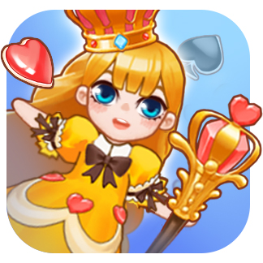
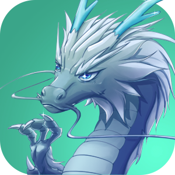
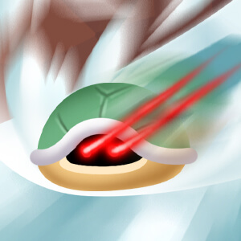
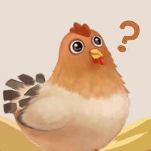
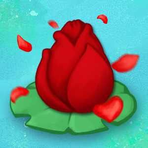

游戏排行
最新游戏
1
山楂串
点击屏幕,移动签子上的水果合成山楂
667360
人在玩
2

女皇登基
帮助女皇解开封印，助她登基
265737
人在玩
3

召唤神龙
滑动屏幕,控制角色吃掉低等级的生物
27536
人在玩
4

龟龟滑雪
帮龟龟下楼，不要碰到刺。
351288
人在玩
5

母鸡下蛋
左右滑动控制筐，尝试接住所有鸡蛋
144698
人在玩
6

睡莲
点击放置花朵，连续三个颜色相同的消除
76720
人在玩
7
车水马龙
点汽车！开出去！别撞车！
242033
人在玩
8
锦上添花
当三个同色花瓣相连时可以消除。
113030
人在玩
9
合成大西瓜
控制水果下落位置，碰撞合成
450872
人在玩
10
牛气冲天
点击屏幕放牛穿越栅栏
326007
人在玩
11
抓螃蟹
甩出钩子，抓住螃蟹！
45886
人在玩
12
神枪手
点击屏幕射击目标
15141
人在玩
13
建造通天塔
别塌了就行
56805
人在玩
14
串串香
把相同的食物串成一串！
95031
人在玩
15
枪王之战
点击开枪，打碎所有瓶子。
56716
人在玩
16
花朵大作战
集合花朵的力量，打倒入侵的蜗牛。
32606
人在玩
17
遍地开花
三朵相连的同色花朵便会开花
84095
人在玩
18
按序停车
按照一定的顺序点击汽车，让车顺利到达停车位。
13722
人在玩
19
纸牌对对碰
将相同数值的纸牌配对,比比谁配的多。
87321
人在玩
20
甜点乐园
相同的甜点合成，利用时间来创造金钱。
14098
人在玩
21
交换数字
点击格子里的数字可以用上方的数字交换,三个或三个以上的相同数字可以合成.
26001
人在玩
22
果缤纷
滑动交换水果,三个相同就可以消除
12220
人在玩
23
大鱼
点击移动棋盘上的鱼，三条以上合成。
17917
人在玩
24
弹金币
按住屏幕蓄力，弹出金币
5725
人在玩
25
整理大师
把物体放到空方格中进行消除整理吧！
5963
人在玩
26
解救公主
点击纸牌接龙,救出公主
35501
人在玩
27
合成大南瓜
相邻的蔬菜可以合成升级，收获漫山遍野的大南瓜吧
259828
人在玩
28
纸牌合十
点击卡牌，两张卡牌的合为10即可得分
7096
人在玩
29
串串丸子
把相同的丸子穿到一起获取更高级的丸子
6293
人在玩
30
弹珠碰碰
发射蓝色弹珠将圈内红色小球打出去
68526
人在玩
上菜
两个菜合成更高级的菜，看你能合到多少分。
58372
人在玩
旅行气球
控制气球充气放气,飞得更远
5472
人在玩
水果碎碎冰
水果三消，碎掉周围的冰块!
41336
人在玩
蛇棋
点击屏幕掷骰子，先走到终点的人胜利！
16942
人在玩
哥俩好
按住屏幕不松手,控制跳跃距离,不要碰到熊和鱼.
105965
人在玩
掏耳朵
把耳朵掏干净！
100551
人在玩
沉重打鸡
点击屏幕出拳打鸡，打空失败。
24206
人在玩
30个苹果
树上有30个苹果，看看你能接住多少个？
45330
人在玩
纸牌传奇
前后都可以接龙的纸牌传奇！
5667
人在玩
珠连必合
点击屏幕串珠子，两个相同级别的珠子会合成更高级的珠子。
8354
人在玩
卖油翁
点击屏幕，开始倒油。
90755
人在玩
大丰收
丰收的季节到了，快来收获更多的水果吧
208110
人在玩
糖果爆爆
点击糖果，相邻的相同糖果爆炸合成
1413
人在玩
乌鸦喝水
一只乌鸦口渴了，倒处找水喝。后来它发现了一个瓶子，但是里边的水很少，它要想出一个聪明的办法来喝到水，你能帮忙吗？
148598
人在玩
水果大王
点击屏幕，发射水果，相同的水果可以合成升级成更高级的水果。
166742
人在玩
春暖花开
点击鲜花，两个以上相同点数的鲜花可以合成一个新的鲜花。
3168
人在玩
四色接龙
经典的纸牌接龙小游戏，正反都可以接。
8032
人在玩
孵化小黄鸭
快让蛋里的小黄鸭去水里游个泳
3304
人在玩
合成黑珍珠
拖动珍珠进行交换，三个相连的珍珠可以合成更好的珍珠
25577
人在玩
刀削面
把握时机，将面条削进碗里
35227
人在玩
象棋马拉松
点击提示位置移动棋子，使棋子向上前进，同时避免被其它棋子吃掉。
18139
人在玩
大力出奇迹
点击弹出白球，把更多的小球打进洞里。
3851
人在玩
双色接龙
一款有趣的纸牌数字连接游戏
4730
人在玩
满汉全席
两个以上食物可以合成更高级的食物，看你能得多少分。
61879
人在玩
天花乱坠
点击屏幕使花朵跳跃，让它借助颜色相同的墙壁反弹，欢快的跳跃在两堵墙之间。
74777
人在玩
齐天大圣
按下屏幕向下滑动，然后松开屏幕发射
850
人在玩
西瓜会爆炸
点击屏幕落下水果合成新的水果
5346
人在玩
千里走单骑
点击屏幕，控制角色避开障碍物。
1421
人在玩
爆米花
滑动屏幕移动小球，弹出爆米花
618
人在玩
丢西瓜捡芝麻
点击屏幕发射西瓜撞芝麻
887
人在玩
天上掉钱
金钱雨来了，大家快拿碗来接钱啊
307
人在玩
蔬菜十字连
点击空格子，将一样的蔬菜消除掉！
929
人在玩
糖果罐头
合理分配糖果到罐头中，看你能得多少分。
7391
人在玩
刀工大师
按住屏幕把食物切片不要切到菜板上哦
39672
人在玩
铲雪车
滑动屏幕控制小车清除积雪不要碰到小人哦
1646
人在玩
弹弹球
点击任意位置发射小球射击数字方块，当数字变成0时方块消失；方块到达底部时挑战失败。如果击中小球，则下次发射时小球的数量会相应增加。
121262
人在玩
圣诞礼物
点击空格子放置礼物，三个相同的合成一个高级别的礼物，合成高级礼盒有惊喜！
6369
人在玩
刮腿毛
把腿毛刮干净，注意不要碰到伤口哦
402352
人在玩
画线捕鱼
滑动屏幕，画线捕鱼。
1245
人在玩
宝石起源
上下左右相邻的同类型宝石合成新的宝石
6174
人在玩
恭喜发财
按住屏幕旋转，让铜钱进入存钱罐
506
人在玩
三消丸子
用签子串丸子，三个相同的丸子可消除。
1771
人在玩
打果子
弹出果子，获取更高的分数吧。
814
人在玩
彩虹屁
看准时机,点击屏幕,让独角兽飞得更高
167300
人在玩
破茧成蝶
两个相同的蝴蝶翅膀组成一只美丽的蝴蝶
2937
人在玩
含苞待放
点击屏幕把秧苗插到没有障碍的地方
696
人在玩
箭无虚发
滑动屏幕拉弓射箭，射中靶心秒杀。
1876
人在玩
30层甜筒
一共有30层，看你能叠多少层!
58313
人在玩
穿串串
点击屏幕,将所有食物串起来.
921
人在玩
以卵击石
按住屏幕发射石头打碎所有鸡蛋过程中不要碰到木栏哦
606
人在玩
见缝插车
把握时机，插入车辆。
169499
人在玩
花田
两个以上相同的花，合成更高级的花朵。
25923
人在玩
暴力扣篮
点击屏幕，篮球向下，扣篮得分
1036
人在玩
水果串串
点击屏幕竹签穿到相邻并种类相同的水果即可消除
291
人在玩
打泡泡
非常可爱和漂亮的泡泡，不同的颜色会给人带来不同的感受。你的使命是击中同色泡泡使其相连。千万别让泡泡填满你的屏幕！
24939
人在玩
纸牌接龙
可以将牌移到牌值仅次于它的牌上。可以像对待一张牌一样一下移动一组。有5次发牌机会。
17585
人在玩
摆块块
你肯定听说过一个经典的游戏名字叫：俄罗斯方块。《摆块块》就是可以随意摆放的俄罗斯方块。更神奇的是，方块还可以通过转动来改变方位。
187525
人在玩
飞刀扎水果
点击飞刀弹起，找准方向再次点击飞出，扎水果
303
人在玩
汽车华容道
滑动汽车，解救出红色汽车
167526
人在玩
鸡蛋大冒险
点击屏幕，发射鸡蛋，反弹加分，看你能得多少分。
247
人在玩
单色纸牌
按照A到K的顺序点击或拖动纸牌到上方的框中。
3734
人在玩
小李飞刀
点击屏幕发射飞刀
9727
人在玩
要饭
看准时间，让饭团跳入碗中。
455
人在玩
21点
点击纸牌与下方纸牌相加减，让结果控制在0到21之间。
577
人在玩
保护气球
画线保护气球
436
人在玩
勤劳的快递员
按要求经过所有的城市，并且不能重复到达某个城市点，最后到达起点即可过关。
1081
人在玩
跳房子
点击屏幕左右，正确的跳到格子上。
778
人在玩
蚂蚁搬家
控制蚂蚁搬运果子，小心别被踩到
3857
人在玩
传纸条
按住学生，向后滑动调整角度和力度，向同学传纸条。
507
人在玩
印度飞饼
划动屏幕把饼扔给对面的人，别被中间的人截住
363
人在玩
汉堡跳跃
滑动屏幕，调整距离，向前跳跃。
11887
人在玩
擦玻璃
看准时机，点击屏幕，开始旋转！
412
人在玩
捣蛋鬼
撞碎物品，躲避符咒
792
人在玩
投篮
这是一个休闲运动类的小游戏。点击屏幕让篮球进网。看看你能投进多少次！
8900
人在玩
摘星星
用小球去追捕更多的星星吧！
224
人在玩
接桃子
按住屏幕控制小车接住桃子
348
人在玩
骰子拼拼
通过拖动使相同点数的骰子拼在一起，从而合成更大点数的骰子。
6426
人在玩
六角拼拼
简单的色块，低调的六角，却蕴含着深刻的逻辑和超强的智慧。如果足够运气的话，拼出来的星星得还会引爆更多的惊喜。
76803
人在玩
四角拼拼
把方块拖入方格，同色同点一排3个即可消除，带心的方块更有惊喜！
369
人在玩
水果一刀切
把握时机，切水果
139331
人在玩
拼到六
相邻三个以及以上的数字，拼成更大的数字。
3477
人在玩
奔跑的章鱼丸
按住屏幕给章鱼丸加速，不要碰到障碍！
34857
人在玩
回转汽车
滑动小车，驶出停车场。
324
人在玩
宝石合并
相同的宝石合成，利用时间来创造金钱
430
人在玩
蝴蝶飞飞
浪漫的连连看，分别点击两个相同的图案，图案之间的连线最多可以拐两次弯！
874
人在玩
接鸡蛋
滑动屏幕把鸡蛋弹到篮子里
417
人在玩
千层甜筒
看你能叠多少层!
555
人在玩
极速飙车
按住屏幕左右控制汽车，获得电池后可以点击方向盘加速
468
人在玩
打水果
长按屏幕，让刀变长，切到水果或蔬菜。
380
人在玩
破碎机
将水果和蔬菜榨成汁，注意不要伤到手
672
人在玩
做果汁
根据订单，调制客人喜欢的饮料吧！！
699
人在玩
画线停车
滑动屏幕，画出路线，使汽车安全到达终点。
1710
人在玩
愚公移山
点击屏幕，使石头越过众人，帮助愚公移山。
192
人在玩
插队
看准时机插队，可不能撞到别人哦
5453
人在玩
杞人忧天
合成太阳，炸掉陨石
137
人在玩
旋转飞刀
点击屏幕，将飞刀扎到圆环上。
103630
人在玩
新版小猫钓鱼
点击屏幕放下鱼竿，钓上更多的鱼
182
人在玩
挤牛奶
按住屏幕，挤出牛奶
6566
人在玩
向上生长
按住屏幕使植物向上长，左右拖动改变方向。
228
人在玩
卖炭翁
把炭拉到集市卖钱
442
人在玩
打地鼠
在限定时间内，打中更多的地鼠，地鼠的出现速度会越来越快，及时的给它一锤吧！
483
人在玩
点球大战
滑动屏幕，选择适合的角度，离开屏幕射出球
213
人在玩
小马过河
抓住时机点击屏幕使木板落下让小马顺利过河
246
人在玩
发车
把握时间，点击屏幕发动车辆
145
人在玩
口罩防御战
只要防护到位，病毒就不可怕。
80
人在玩
磁铁粘粘
滑动屏幕，扔出磁铁，冲过终点线。
66895
人在玩
狙击手
拖动准镜瞄准敌人，松开手指射击。
155
人在玩
猴子上树
把握时机，抓住木桩，猴子上树。
194
人在玩
消星星
不同于以往的消星星～增加了关卡和生命的概念，给你耳目一新的感觉～
503
人在玩
舞龙
不要让龙头碰到灯笼
341
人在玩
射苹果
把握时机，射中苹果。
4357
人在玩
贪吃鱼
点击屏幕，让鱼躲避网，并吃到食物。
170
人在玩
涂鸦弹球
滑动画线，使球安全到达终点。
148
人在玩
环游世界
点击连续跳跃，跨过障碍，欣赏风景，吃掉星星。
345
人在玩
猫和老鼠2
滑动屏幕，用叉子击退偷奶酪的老鼠。
434
人在玩
点火
把所有东西都烧掉
383
人在玩
钉钉子
按住屏幕往上移。把握时机，钉入钉子，一共30个。
3903
人在玩
这是我的菜
伸出筷子，夹走火锅中的食材
540
人在玩
找你妹
根据提示，寻找物品。
899
人在玩
去火星
左右滑动屏幕控制火箭躲避星球，飞向火星
1100
人在玩
小小骑士
滑动手指攻击来自上下左右的敌人。
65
人在玩
弹一弹
点击生成挡板，阻止小球掉落
932
人在玩
荡秋千
按住屏幕，小猴子会抓住最近的树条，保证小猴子不会掉下去，看你最终能走多远
400
人在玩
作弊
按住出现叹号的学生开始作弊，松开停止作弊。
338
人在玩
扣瓶盖
点击屏幕为饮料扣瓶盖
254
人在玩
皮皮鼠
选择方向，发射小老鼠。
84
人在玩
极速射击
点击屏幕，瞄准炸弹射击。
84
人在玩
拯救小猪
按住屏幕使小猪充气膨胀，堵住飞船，使飞船坠毁
69
人在玩
循环火车
把路过的煤都放入火车上，小心别撞车了哦！
197
人在玩
独轮车
点击控制火柴人的倾斜角度，以保证火柴人不摔倒
128
人在玩
叠罗汉
调整好角度，摞得高高的！
2545
人在玩
送快递
把门口的快递箱子搬送到车上。
361
人在玩
浇花
合理利用石块和阀门给花浇水。
86
人在玩
士兵突击
用红方的士兵，消灭对面的棋子。
269
人在玩
跨栏
点击屏幕跨栏
166
人在玩
浇菜
按住给蔬菜浇水
61
人在玩
下坠小球
左右滑动，让小球下落
122
人在玩
边走边吐
将呕吐物吐到别人脸上！
742
人在玩
捞金鱼
点击屏幕，捞起金鱼。
599
人在玩
小猫钓鱼
你肯定听说过《小猫钓鱼》的故事吧！在这个游戏中，可以钓到好多日常生活中无法看到的鱼。现在就开始吧，耐心一点点就会赢得游戏的胜利。
154
人在玩
捕鸟
100只鸟十次机会，看你能捕多少只？村民和队长都在等你！
71079
人在玩
拆弹专家
围住炸弹，小心爆炸哦。
124
人在玩
丘比特之箭
这是一个令人兴奋并且非常浪漫的游戏。发射丘比特之箭，击中游戏中的红星，你将完全陷入了爱河。同时要留意屏幕中的黑星！
118
人在玩
翻转水瓶
点击屏幕翻转水瓶，到达终点。
72302
人在玩
猫和老鼠
水平滑动屏幕，放开手逮老鼠
75
人在玩
守护蛋蛋
点击屏幕有两侧 来移动车
140101
人在玩
黄金分割
滑动屏幕切割物体使其坠落，坠落数量达到目标数过关
390
人在玩
猴子捞月
当猴子对准水中月亮时，点击屏幕捞起月亮
72
人在玩
四消水果
当4个相同的水果相连时会爆炸，水果只能在无阻挡的道路上通行。
636
人在玩
象棋大逃杀
我方是车，点哪走哪，吃掉对方棋子！
5071
人在玩
糖葫芦大王
交换水果位置，三个连续相同的水果串成一串。
1450
人在玩
无敌破坏球
扔出小球，砸碎玻璃杯！
73527
人在玩
玩块块
拖动任意块块，当三个相连时爆炸。
508
人在玩
大闹天宫
点击屏幕，跳到下一个桥上。
1670
人在玩
一碗球
让碗落到地上，别把球洒出来，洒出一半就输了
150
人在玩
开车去旅行
按住车辆加速，注意躲避来往车辆。
263
人在玩
狼和小羊
合理建造围栏保护小羊，支撑到农场主赶走狼
405
人在玩
爆冰块
三个相同的图形消除时会破碎周围的冰块，注意有的冰块是两层的！
397
人在玩
爱就一起飘
丛林中危险重重，要躲过各种障碍，那样才能走的更远～小心圆圆的障碍，它会把你弹飞哟～
74
人在玩
宝石传奇
点击小宝石并消除，让大宝石落到最下边。
66
人在玩
果冻萌萌哒
点击果冻消除，会引爆周围相同颜色的果冻，注意，当屏幕上果冻数量超过规定上限则游戏结束。
124
人在玩
旋转消消
点击界面，旋转方块，消除方块。
43
人在玩
十字连心
点击空白格子处，十字方向有两个以上同色时消除，单次消除个数越多分数越高，剩余数量小于3时，加一生命，否则减一生命，祝您游戏愉快～
669
人在玩
豌豆射手
点击屏幕打僵尸
154
人在玩
擦一擦
擦拭图片,合理运用能量 根据显示猜出什么答案
97976
人在玩
星球大战
左右滑屏，星球大战
163
人在玩
摆六角
点击旋转，拖动摆放图形。
315
人在玩
滴水不漏
按住屏幕向容器中注水，不能多也不能少,每关三次机会哦
31986
人在玩
拉火车
选择上方三列牌中的任意一列点击，将下边的牌放到该列，如果有相同数字的牌则消除。
799
人在玩
BB弹
点击发射，打掉方块
177
人在玩
跳火圈
按住屏幕蓄力，松手跳过火圈。
76
人在玩
骰子合合
点击骰子，两个以上相同点数的骰子可以合成一个新的骰子。
234
人在玩
守株待兔
移动石块，摆出一条正确的道路。
58
人在玩
粉笔弹球
点击屏幕，小球朝该方向运动，球进绿框胜利。
47
人在玩
俄罗斯方块
一款经典的游戏，一个新奇的玩法，消除更多的方块吧。
652
人在玩
旋转弹珠
经典游戏，简单有趣。
191
人在玩
搭桥
点击屏幕固定桥板，搭一座可以通过的桥
215959
人在玩
蜂窝拼拼
点击界面组成拼成更多的数字。
38
人在玩
推箱子
把所有箱子推到目的地
222
人在玩
山峰纸牌
可以放入点数差1的纸牌，最后剩余纸牌会叠加到时间上哦。
165
人在玩
如意金箍棒
如意金箍棒本是太上老君冶炼的神铁，并成为定海神针放在东海。后来成为孙悟空的兵器，能大能小，能长能短，来体验一下它的神奇吧！
52
人在玩
找朋友
帮相同颜色的小伙伴在一起！
69
人在玩
小马过河
当需要跳起或跨越时，快速点击屏幕帮小马顺利通过。
211
人在玩
海马逃生
旋转拖动，摆放方块，为海马创造一条生路。
56
人在玩
糖块消消
拖动糖块，摆满一行可以消除
79
人在玩
三角同心
点击，旋转，消除
24
人在玩
水果炮弹
点击相同水果可消，落下水果相同超过四个连消，顶到黑线处游戏结束。
98
人在玩
双喜临门
点击空白格十字消除，剩余不超过三个就成功了哦！
128
人在玩
海滨消消乐
点击小鱼，相邻的同种类小鱼三个以上即可消除
64
人在玩
不超过十
选中数字，横向或斜向消除减小数字。
81
人在玩
高尔夫球
拖动屏幕把球打入球洞
197
人在玩
五福临门
点击福字，旋转消除
52
人在玩
四通八达
把方格中相同的色块连接到一起。
48
人在玩
解救皇后
将可接序的牌放在相应花色的5和6上。
50
人在玩
守卫高地
点击屏幕开始打飞机
47
人在玩
找方块
这个一个非常令人兴奋的游戏。在游戏屏幕中找到一个颜色特殊的方块即可顺利过关。这非常考查眼力，据说大多数人都无法玩到第55关。
112
人在玩
姜太公钓鱼
当鱼儿游到钓钩的下面，点击屏幕，钓起小鱼。
89
人在玩
别顶方块
点击左右，避开方块，当然你也可以撞碎它
92
人在玩
小猫拾鱼
小猫调到相邻的的上下的石块上去拾鱼，看谁捡的多哦。要注意途中随时出现的针刺，碰到之后，游戏就会结束。
16
人在玩
青蛙走格子
点击相邻格子，或滑动屏幕，控制青蛙移动，走完所有格子即为成功
37
人在玩
黄金矿工
经典黄金矿工，拖拽过程中再点一次屏幕使用炸药！
50117
人在玩
水管工
点击旋转水管，使水管连通。
121
人在玩
凑成K
分别点击两张牌,使其相加凑成K。
111
人在玩
旋转魔方
耳目一新的感觉，让你停不下来！当同色的方块连满一圈时，会有意想不到的效果哦～
131
人在玩
一块不漏
把下边的方块一块不漏地拖放到上边的空格中。
104
人在玩
小怪连连
把相邻的同色小怪连起来，一次连6个以上小怪有惊喜！
63
人在玩
捕鱼
100条鱼10次机会，看你能捕几条？
34
人在玩
丢甜甜圈
看你能把甜甜圈丢多远！
83
人在玩
约会
漂亮的小女孩在如画的风景中赴约，她一边行走，一边摘到空中星星。你的使命就是保护小女神摘到更多的星星。
452
人在玩
六角消消
这是一个迷人的游戏：连在一起的同色方块达到3个或以上时，将会自动消除。六角也会自动旋转，你可以任意选择掉进六角的方块颜色。
278
人在玩
筋斗云
点击屏幕任意位置控制筋斗云躲避障碍，祝您飞的更远。
27
人在玩
解锁糖果
点击上层糖果来解锁下面更多的糖果，称上超过三个相同的糖果便可消除
215
人在玩
打掉砖块
游戏中会陆续出现一排排砖块。点击游戏下方发射小球，使其击中正在移动的砖块。当你第一次击中后，就会发现动作根本停不下来
379
人在玩
五子棋
当5个棋子相邻并且连成一条直线时获胜。
239
人在玩
快乐划划消
按照方块的顺序在方格里滑动，4个同色相邻的方块可消除。
26
人在玩
打鸡蛋
一共20个鸡蛋，当鸡蛋碰到铁锅的瞬间，点击屏幕打破鸡蛋。
64
人在玩
渐变色
根据颜色的深浅，依次拖入到上面的方格，进行排列方块颜色顺序。
29
人在玩
从一合起
双次点击两个以上相邻的数字，消除使数字加一。
16
人在玩
小明骑单车
点击屏幕左侧往左偏，点击右侧往右偏，角度越正速度越快。
45
人在玩
颠球
点击球，别让球掉到地面上去。
51
人在玩
交换消消
分别点击不同颜色的方块交换位置，当4个同色方块相连时可消除，白色方块具有特别的威力。
171
人在玩
一线合十
连接10以下的数字，和为10可以消除，如果是10以上的则需要相邻并且相同的2个数字才可以相加消除。
57
人在玩
小蝌蚪找妈妈
100只小蝌蚪，60秒内躲开鱼虾龟就可以成功找到妈妈。
263
人在玩
六角萌萌消
又是一个新颖的玩法，六边形的俄罗斯方块！来试试吧，绝对让你停不下来。
152
人在玩
看图识影
这是一个有趣的游戏：你能选中这些盘子从空中的投影吗？
18
人在玩
充电工厂
考验你的手指触动，看准目标，点击屏幕充电开始，充电量越接近目标值，分数就越高哦~，过高或过低目标值游戏会结束啊~
936
人在玩
丢纸团
握个纸团，丢到垃圾桶～来试试你能丢进几个？注意风向的影响哦～
45
人在玩
彩圆融融消
懒人必备，新颖的操作方式，解放你的手指。当四周有相同数字时，会进行融合消除，很有意思～快来玩玩吧！
147
人在玩
加一消消
点击数字加一，三个相同数字相连即可消除。
205
人在玩
羽毛球
这是一个劲道十足的羽毛球游戏，时而像出膛的炮弹，时而像离弦的箭，时而像天外的流星！
183820
人在玩
亲戚
还在为不知道怎么喊周围的亲戚发愁吗，过来玩一下，一切都会啦！
51
人在玩
一字千金
准确的找出上述谜面对应的谜底，选进框内。
53
人在玩
七星瓢虫走迷宫
点击下方按钮控制瓢虫移动，请在规定时间内走出迷宫。
29
人在玩
一般大
观察下面的方块，找出和上面相同大小的方块。
16
人在玩
猜灯谜
猜灯谜又称打灯谜，是中国独有的一种传统民俗娱乐活动，快来玩玩吧！
155
人在玩
火柴人躲避球
按住屏幕左边往左跑，按住右边往右跑，左右移动使火柴人躲避开球！
48
人在玩
1236
一款类似2048的小游戏。通过向上下左右四个方向滑动屏幕，使所有方块朝同一方向滑动，1和2可以合并成3，3和3以上的需相同数字才可合并。
50
人在玩
彩片迷踪
找出不同那个彩片，时间过了或者选错两次则游戏结束。
18
人在玩
找出那个唇
仔细观察找出下面的嘴唇和上图嘴唇相同的图片。
393
人在玩
迷你台球
简单有趣的迷你台球，点哪去哪，把其它小球全部撞进上下的黑洞里吧。注意：如果母球撞进了洞里面或者步数用完，游戏结束。
133
人在玩
环环相扣
绝对你没见过的玩法～漂亮的圆圈配合酷炫的特效，让你眼前一亮！当一条线上有3种同色时消除，一个点上有3种同色时也可消除。
187
人在玩
数字大作战
可以和玩家对战的游戏，比比看谁先点完，快来试试吧！
14
人在玩
小心点
根据界面提示进行点击操作，注意界面的提示内容。
55
人在玩
祝福
在有限的时间内拆开更多的福包吧，看谁抢的又快又多。
24
人在玩
数字连十
连接两个数字相加等于10，注意上面的时间限制哦。
44
人在玩
溅射泡泡
点击屏幕发射泡泡，可反弹，打中泡泡后慢慢增长，增长到最大时会向四周溅射新的泡泡。
29
人在玩
红白阶梯
点击左边的按钮保持跳跃方块的颜色不变，右边的按钮改变跳跃方块的颜色，让方块跳跃的时候，保持楼梯和方块的颜色一致。
21
人在玩
穿越彩圈
当彩圈旋转的颜色和小球的的颜色相对应的时候，点击屏幕让小球穿过彩圈。
15
人在玩
心球大战
让旋转的球躲避发射过来的蓝色小球，长按屏幕可以让旋转小球加速。要吃到红心啊，这样可以增加生命。
17
人在玩
数字跳跳
双击可以连续跳跃，跳动的数字只能在0～9范围内变化，画面清新脱俗，快来试试吧！
19
人在玩
时间
把握时间，来检查一下你对时间的敏感度吧！找出与其他表盘指针行动不一致的表。
18
人在玩
点到为止
在指针指向对应颜色时点击屏幕，指针会越来越快。
24
人在玩
回转小球
用杯子接住小球，小球的颜色不同分数也不同，快来试试吧！
38
人在玩
红蓝大战
测测眼力，比比看选红色的多，还是选蓝色的多？
29
人在玩
猪上树
见过会上树的猪吗？ 在这里你将会体验到猪上树的奇迹时刻。要注意：在猪爬行中要避开随时伸出的树枝，爬得越高，得分越多。
64
人在玩
一划成词
滑动屏幕，在一大堆混乱的字母中找出所需要的单词。
35
人在玩
左右一般大
睁大眼睛仔细观察左右两个图形，点击界面，修改右面的图形，让两个图形相似。如果相似度低于80%，游戏结束。
28
人在玩
就不爱你
看准时机，点击屏幕任意位置发射爱心，被对方成功劈开则加分，击中对方则减一颗心，爱心全部减完则游戏结束。
23
人在玩
转盘接球
上下或者左右滑动界面，让中间转盘旋转起来，有三个以上相邻的相同颜色小球就会消失加分。
14
人在玩
找出那个字
汉字，博大精深，这是一款关于汉字的游戏。在给出的汉字中，找出其中不同的那个字来。
103
人在玩
忐忑
当两个方块重合时，会消除。游戏中配了钢琴的音效，快来试试吧！
31
人在玩
填成语
将成语补充完整，用时越短，得分越高。看看谁才是真正的学霸。
105
人在玩
垒方块
控制方块掉落，尽可能多的在桌子上堆叠方块，如果有方块掉出屏幕则游戏结束。
25
人在玩
转转棒
拖动黄点，选好轴心，击中小球！看看你能打中几个！注意不要碰到下面的虚线处。
12
人在玩
一字一色
测试你的左右脑，选择出正确的颜色，用时快得分高，小心别被误导。
106
人在玩
一碰就消
点击方块可消除,方块下落时撞到3个相连的可消除,随着点击次数的增加颜色会逐渐增加，祝您游戏愉快。
80
人在玩
球球要回家
拖动隔板，控制红球和篮球到对应的红蓝区域，通过的关卡越多，球的数量也会越多哦。
51
人在玩
我最大
在众多的方块中，有一个略大的方块，你能找到他吗？考验你眼力的时刻到了！～
26
人在玩
灭灯
点击任意一盏灯切换开或关的状态，同时与其相邻的灯也会变换开关状态，连续操作至到把所有的灯都关灭。
16
人在玩
放飞气球
放飞气球，让气球飞的更高！注意随时刮过来的风哦。碰到墙壁游戏会结束啊。
10
人在玩
旋转球
让旋转球大步向前走起来，吃到蓝色的小球加一分，吃的越多，分数越高。如果碰到了运动的红色小球，游戏就会结束。
15
人在玩
一起活下去
点击屏幕任意位置切换移动方向，躲避绿色星球的撞击，加橙色星星得分，一起活下去吧。
82
人在玩
一石N鸟
拖动石子，寻找合适的角度，射击那些可恶的怪鸟，连击越多，加分翻倍。
51
人在玩
草船借箭
瞄准，发射，射沉来借箭的草船，小心不要让草船逃脱。
15
人在玩
目不转睛
你的眼球跟的上这纸杯吗？猜猜球在哪个杯子中。
21
人在玩
球球上三环
球球可以上三环？没错！球球可以围绕着对应颜色的环进行旋绕，万能的红色小球碰到环上面的小球可以进行消除它们。要注意：其它小球如果相互碰到或者相同颜色的小球碰到，游戏就会结束。
24
人在玩
吸盘消消
一款经典而新颖的游戏，吸盘中可以吸入同样颜色的宝石，左右可以移动吸盘，快来试试吧！
34
人在玩
疯狂的咸鱼
做一只有梦想的咸鱼，看谁能穿过目标圆筒，掌握发射时间，实现目标。
56
人在玩
伐木累
让手指疯狂的运动起来，砍掉那些无休止的树杆。哦，对了，要注意树枝和时间限制哦。
45
人在玩
移动的时间
时间不停的转动，纪录着我们每一个瞬间。 不同的时间，纪录着我们不同的故事。
13
人在玩
梦幻圆圆消
三个相同颜色并且连成一条直线时（包括斜线方向）会消除。每当移动的小圆没有被消除，池子中就会生成新的，当满格的时候，游戏结束。
17
人在玩
找不同
在规定时间内找出其中不同的表情，越快找出得分越高哦！
173
人在玩
调色盘
发射小球射击同色彩带，若击中中心圆或击中不同颜色的彩带，则游戏失败。
0
人在玩
3D跳跃
这是我们第一款3D游戏，虽然有很多不足，但是我们会不断的努力，希望大家能够喜欢～
0
人在玩
放风筝
小时候在语文课本上见过，长大后在城市公园里见过，放风筝是汉族民间最传统的游戏之一。中国风筝的历史至少有2000多年了。从唐朝开始，风筝逐渐变成玩具。在移动互联网时间，放风筝变成了一款手机游戏，玩家可通过点击屏幕的不同区域来控制风筝飞行方向和力度，在加速或是躲避障碍物时会觉得轻松自如。《放风筝》游戏适合推广休闲娱乐品牌或配套大型户名活动做线上预热和宣传。
82
人在玩
对对碰
点击屏幕，让小球运动起来，碰到障碍球游戏结束~，吃到沙漏小球，减慢障碍球速度，吃到了黑圈小球增加一次生命，加油~
47
人在玩
打掉砖块2
点击界面小球会运动并且穿过砖块，碰到砖块，砖块就会掉落，小球运动中没有碰到砖块，游戏失败。
18
人在玩
彩虹圈
彩虹圈，发射小球，击中旋转中颜色相同的圈，快、狠、准才能获得好的成绩
7
人在玩
放飞蒲公英
一个超级小巧却很耐玩的游戏，根本停不下来是玩家对她的评价。蒲公英的种子飘飘洒洒、无边无际地传播快乐，也传播着希望。《保护小球》、《微伞》、《智慧摩天轮》是她的曾用名，征求了开发者仔贤的意见最终把名称确定为《放飞蒲公英》。这款游戏特别适合放在微信公众号或APP下增加粉丝活跃度并吸引更多的用户关注。
206
人在玩
对下句
还记得那些年一起背过的古诗吗？快来和我重温一遍。
70
人在玩
高山滑雪
穿越树丛，躲避障碍。来感受一下高山滑雪的乐趣吧！
66
人在玩
黑白球
点击屏幕任意位置控制小球跳跃躲避障碍，碰到转换球可以改变小球到另一边对应的位置。
14
人在玩
幸运大转盘
停下匆匆的脚步~，转出今天的幸运数字~，转出今天的好运气~
8
人在玩
转转碰
考验你的眼力，点击屏幕时会绕中心旋转一圈，拉出一条优美的弧线，试试能不能碰到那个彩色的点。
17
人在玩
同化方块
用最短的步数，把所有的方块变成同一个颜色，注意技巧，越变越多！
15
人在玩
反弹球
碰撞彩色的小球，绽放绚丽的斑点。分数叠加很高，前期要多打中些哦～
47
人在玩
方块百分百
奇妙的方块，你需要改变他的大小，让他刚好落在夹缝中。怎么样，你的准确率有多少？
11
人在玩
水果连连看
这是一个水果消除的游戏。分别点击能直线相连的相同水果，即可消除。所用时间越少得到的加分越多。
0
人在玩
星空约会
一个个笑脸从天空中落下，当她和游戏下方的按钮重合时点击发亮的按钮，就能得分。如果笑脸飞出屏幕则游戏结束。
9
人在玩
来听可乐
红色、黄色、蓝色的罐装可乐会一瓶一瓶地出现在屏幕中。点击游戏下方对应的可乐图标，看看一分钟内能来几听可乐。
32
人在玩
同色相连
你可能会有好多种办法把相邻的相同的方块连接起来。一次连接的越多，得到的分数越多，方块有限，方法无穷！
0
人在玩
勇闯电线杆
点击屏幕小鸟上飞，如果踩到线则游戏结束，看看你能上到多少层！
38
人在玩
测眼力
通过观察空心圆的大小，然后通过点击屏幕放大实心圆的大小，看看和空心圆相差多少
23
人在玩
转转车
疯狂的环形赛道，紧张刺激的氛围，看你能撑多少圈～
25
人在玩
连连消
分别点击游戏中两相同颜色的方块，使他们连在一起即可消除。她们说这个游戏玩起来就停不下来。快速连击会有惊喜！
31
人在玩
垒块块
点击屏幕任意位置切割，小心不要掉下去，完美切割，掌控自如，打好基础才能到达更高层
10
人在玩
环绕星空
环绕星空，领略星空中不一样的风景！一起来欣赏一下吧！
13
人在玩
十全十美
点击屏幕任意地方，发射带有数字的方块，射击上方的方块，如果数字相加为10则加分，否则失败。
19
人在玩
一点就走
点击屏幕任意位置控制小球前进或者停止，躲避障碍物。前进的路上总会有障碍，不要害怕，勇敢面对，并找到出路。
22
人在玩
转角遇到爱
点击屏幕任意位置控制三角形改变方向，撞击红心，连续撞击可以加快获得分数，小心不要碰到黑色的爱心哦~~
27
人在玩
放飞蒲公英2
一个超级小巧却很耐玩的游戏，根本停不下来是玩家对她的评价。蒲公英的种子飘飘洒洒、无边无际地传播快乐，也传播着希望。
16
人在玩
旋转彩虹糖
诱人的糖果，搭配漩涡型排布，又一款小而精巧的游戏，来试试吧~
46
人在玩
转转圈
转转转，飞出圈圈～手速慢的要走稳健派哦～一起来玩吧！
11
人在玩
小兔下山
兔子下山，对山下的景色、文化充满了好奇，下山会经历什么呢，一起来体验一下吧
109
人在玩
炸烟花
这是一个非常浪漫的游戏。点击屏幕发射子弹，子弹击中烟花会爆出绚丽的花朵并生产更多的子弹。子弹会再次击中烟花爆出更多的惊喜。
18
人在玩
星星点灯
当小球移动到白色圆圈时，根据白色圆圈上圆的颜色，点击屏幕相应的颜色的上方，如果点击时，运动的小球在白色圆圈内，则点亮相应的星星！
17
人在玩
大球吃小球
点击屏幕，通过摇杆控制小球的方向，吃掉比自己小的小球，躲避比自己大的小球
60
人在玩
横冲直撞
这是一个过马路的冒险游戏。红色目标会在你的控制下不断躲避障碍并向前移动。移动的距离越长，得分越多。
25
人在玩
冰雪奇缘
这是我见过的最勇敢的雪花，机智灵活且动感十足。她不断地在空中旋转，躲避了重重障碍之后，重重的打在了雪地上。
10
人在玩
穿越三重门
这是一个紧张且令人愉悦的游戏。点击发射小球，让它从游戏的底部穿过三道移动的门。游戏一旦开始，你发现根本停不下来。
66
人在玩
守株待兔
曾经都听过守株待兔的故事，玩了这个才知道～兔子原来是这么撞上树的。。
16
人在玩
画圆
圆有和谐美满、团圆的寓意～ 动动你的小手指， 来画一个大圆吧！
15
人在玩
弹跳兔子
不停跳跃的小兔子～ 注意两边的尖刺～ 看看你能坚持多久！
23
人在玩
月轮
夜晚的城市上空～ 皎洁的月轮～ 构成一幅美丽的画卷～ 来挑战一下你的反应吧！
15
人在玩
另一个地球
另一个地球，神秘的世界，等待你一起来发现～
18
人在玩
月下
明月之夜 回家团圆～ 皎洁的大月亮 一根杆子 一部小车，考验你的精准度！
12
人在玩
奔月
雪白的兔子，踩着云朵不断奔向星空，游戏中运用了重力感应系统，骨骼动画，非常清新好玩的游戏，快来试试吧！
23
人在玩
曹冲称象(彩石版)
飞翔吧！石头君～注意不要扔歪了哦～ 据说玩这个感觉很重要！
11
人在玩
穿越摩天轮
黑色的小球旋转着～ 就像我们小时候坐过的摩天轮～ 游戏需要敏锐的反应与观察～ 躲避旋转的障碍，冲入云天吧！
14
人在玩
糖衣炮弹
小心糖衣炮弹，消灭糖衣炮弹，赢取最后的胜利～
91
人在玩
恰到好处
一定要把握好时机，让小鸟顺利通过，不然就会失败了～～
22
人在玩
翻山越岭
控制萌萌的小羊，可以通过跳跃躲开其他的小羊，连跳可以跃到上层～来试试你能上到多少层吧！
34
人在玩
金鱼良圆
金鱼游呀游，躲避障碍，来寻找自己的缘分吧～
19
人在玩
看看世界
考验你的眼里，与记忆力～抓紧时间！看看你最短多少秒完成！
24
人在玩
弹跳小球
弹弹弹～给小球施加力～小心不要碰到地上的尖刺～
12
人在玩
曹冲称象(经典版)
飞翔吧！石头君～注意不要扔歪了哦～ 据说玩这个感觉很重要！
11
人在玩
心跳
一根红线牵引你，穿山越岭找到你，没错～玩的就是心跳！
34
人在玩
百花齐放
梦哒哒的花朵图案，配上转动的风车，别有一番滋味～ 单次消除个数越多加的分越多哦～ 来试试吧！
37
人在玩
泡泡鱼
在海底世界，享受捕鱼的快乐，气泡的数量会随着捕鱼的数量不断增加，快来体验吧
20
人在玩
捕鱼
躲避海底的鲸鱼，试试看能否捞到海底的珍珠吧！有时间限制哦，抓紧了！
48
人在玩
投放礼包
礼从天降有一种说不出的喜悦，既需要眼急手快，反应灵敏，又需要那么一点幸运。当第一个礼包装上般的时候，就掌握了游戏的节奏并渐渐地进入了玩家角色，装满整条大船也变得并不是那么困难。这款游戏适合各行业的品牌推广和市场营销活动。
10
人在玩
水循环
当水蒸汽升上天空变成了一朵小云，当众多的小云连成了一片大云，当雷电把云朵变成了降雨，当乌云遮挡了白云，化为无有，一切都显得那么的神奇。《云朵》是一个特别好玩的游戏，不信的话，试试再说。这款游戏适合绿色、环保、农业等品牌推广和市场营销活动。
11
人在玩
包粽子
又是一年端午节，家家户户都要吃粽子。打开微信和朋友一起包粽子，自己动手美味美，想吃什么口味全由自己作主！
55
人在玩
补充维生素
在《补充维生素》这个名字问世之前，开发者习惯性地把这款游戏称为快速消水果。和其实类似的游戏相比较，这款游戏的特点就是要快，只有快速地消掉水果、补充了维生素，游戏才可以继续下去。这款游戏适合水果、饮品、营养品、绿色食品品牌的推广和营销活动。
23
人在玩
轻舟
没有听到两岸的猿声，但是《轻舟》已驶过了万重山！这是一款游走在动与不动、声与不声的游戏，无论是在忙碌的工作之余，还是在它乡入驻旅店之后，总会在《轻舟》中找到心灵归宿并彻底安静下来。第一次融合了山水画，第一次驾驭小舟，第一次穿过万重山… 总之以前没有见过这样的游戏。《轻舟》游戏适合旅游、休闲、娱乐、文化品牌的推广和营销活动的组织。
20
人在玩
小猫做绿化
一只可爱的小猫，在梯田般的方格里跳来跳去，她的跳到的方格就变成了绿色。这个好像有点不太靠谱，但玩起来还蛮有意思的，因为小猫也不知道他在做绿化之前会出现几块梯田。《小猫做绿化》可以引导传播的商业品牌和企业类型有：动物和宠物行业、绿色产品企业、休闲旅游产业等。
57
人在玩
消除雾霾
点击一下，消除雾霾；力量虽小，举手之劳；天空变蓝，心情大好。见过多款和消除雾霾主题相关的游戏，觉得这是最有成绩感和可玩性的一款。其实，在雾霾面前，成绩感和可玩性显得有点苍白，而重要的是参于。《消除雾霾》游戏适合于健康型、环保型企业发起商业品牌推广和公益宣传活动。
50
人在玩
我心飞扬
在这个高大尚的名字出现之前，她有一个低调而内敛的名字叫：《团结一心》，后来征求了原画师小翟的意见，认为《我心飞扬》这个名字具有更大的想象空间，并且多了一份洒脱。轻松驾驭、游刃有余是试玩这款游戏的最大感受。《我心飞扬》游戏适合年轻人玩，也适合快速消费品牌、网店、微商、大众消费品牌做活动宣传和商业推广。
39
人在玩
龟兔赛跑
淘气乌龟～可爱兔子～ 翻过山川～越过丛林～
11
人在玩
小滑叽
操控小滑叽，躲避大箱子～ 注意操作哟！你是在推他不是在拉他～
9
人在玩
刻舟求剑
一起来求个大宝剑吧！屠龙大宝剑～你 值得拥有～
20
人在玩
七彩转盘
很有新意的转盘，不同于以往的单点式，更刺激更有趣！
10
人在玩
后羿射日
穿越过去，变身后羿，来吧！把这个拉仇恨的太阳射下来！
18
人在玩
一起摇摆
在绳索上摇摆～ 一定要抓准时机，否则会坠入谷底哦～
36
人在玩
旅行的意义
飘零的花瓣～ 绿荫树下～ 行驶在这样的路上总有种安逸的感觉。小车可换道可跳跃～！ 很有趣哦～
18
人在玩
寸有所长
尺有所短，寸有所长，把握好尺寸，才能走的更远～
58
人在玩
松鼠快跑
通过不断的跳到高处，躲避来自地下的危险，还可以吃到松子，获得额外的加分～
9
人在玩
淘金
在金币的世界，看你能控制多少金币，赶紧打造你的金币帝国吧～
7
人在玩
积少成多
积少成多，小心的积累自己的金币，小心不要让它掉下来，掉下来就失败了～
10
人在玩
爱情公寓
爱情公寓，建设属于你和我自己的梦想公寓～
55
人在玩
喂熊猫
熊猫翘翘板，通过喂竹子，使两个熊猫保持平衡，千万不要偏心哟～
10
人在玩
节日密码
你是节日王吗～你猜的出几个节日来呢～快来试试吧！
69
人在玩
木头木脑
上下拉伸身体的我，不会让任何美味从我眼前溜走～
8
人在玩
踩色小球
踩色小球，需要踩到和小球颜色相同的才可以跳过，小心其他颜色的路～
10
人在玩
笼中鸟
周围到处是钉子～ 小心控制鸟儿～看看你能坚持多久！
13
人在玩
蜗牛
一只蜗牛，穿越在丛林之间，可以看到一个飞奔的蜗牛～
30
人在玩
笨鸟先飞
我是一只笨笨鸟，但我却不断的努力、努力！！
16
人在玩
凌波微步
踩踩踩～ 小心不要踩错了哦～ 游动的鱼儿，飘荡的荷叶，小清新的风格 来试试吧～
16
人在玩
变色甜甜圈
通过转换甜甜圈下面的颜色，完成甜甜圈的弹跳，记得要看住甜甜圈的颜色哟！
9
人在玩
祈福
祈福，通过放花灯，将祝福送给远方的朋友～
10
人在玩
消除彩色冰块
消除彩色冰块，消除十字方向颜色相同的方块，就能赢取更多分数～
19
人在玩
一路向北
一路向北，浏览大好河山，无限风光近在眼前～
28
人在玩
颜文字
萌点、品味、气质、颜值，一开始，这些值是一样的，但随着时间的变化，这些属性值是逐渐减少。这时既要考察玩家眼力，又有那么一点点运气。消除的越快，萌点越高；消除的越快，品味越高；消除的越快，气质越好；消除的越快，颜值越高。颜消消，一切由你掌握。这款游戏适合各行业的品牌推广和市场营销活动。
28
人在玩
南水北调
先要经过村庄，才能到达城市，虽然困难重重，但是意义重大。《南水北调》是一款非常有现实意义的益智小游戏。有效地避开大风车的阻挡，才能实现游戏目标，“办法总比困难多”是玩家对游戏最多的评价。这款游戏适合农业、绿色食品、水资源、环保产业等品牌推广和市场营销活动。
35
人在玩
贪吃蛇
贪吃蛇是经典手机游戏，既简单又耐玩。通过控制蛇头方向吃蛋，使得蛇变长，从而获得积分。小的时候就玩家好多这样的游戏，但这款贪吃蛇却给人留下了深刻的印象：简单、有趣，其实这就够了！这款游戏适合各行业的品牌推广和市场营销活动。
109
人在玩
POP泡泡
每一个水泡都分成三个等级大小，点击一次水泡增大，当达到最大的时候就会破裂并形成四个小水滴，小水滴溅到周围的水泡又会发生新的裂变。既需要智力，又靠运气。曾有玩家只点了一下就完美的收官，来试试吧！这款游戏适合各行业的品牌推广和市场营销活动。
24
人在玩
捉贼
贼通常是黑夜行动，喜欢金银财宝、名贵字画或现钞，动辄以麻袋为作为财物的计量单位。黑夜《捉贼》，这个游戏玩起来更有意思。适合于保险、保安产品及服务的品牌推广和市场营销活动。
43
人在玩
消除方块
消除类的游戏一直深受玩家的喜欢，有乐趣且操作简单是她的特点。见到过太多的以动物、植物作为图案的方块，看起来眼花缭乱，找想来手忙脚乱。《消除方块》中每个方块都是纯色，玩起来更容易、更安静。这款游戏适合各行业的品牌推广和市场营销活动。
55
人在玩
加电赛车
以前只习惯于说给汽车加油，很少提起给汽车加电。直到亲眼看见在停车场的充电桩前有汽车像加油一样加电，才彻底适应了这个叫法。没有专业的赛道、没有专业的赛车、甚至没有明确的比赛规则，但游戏的画面流畅，加电之前的突然加速、车辆尾部拉出的火焰依然能感受到屌丝级的快感。《加电赛车》适合于汽车行业的产品和服务推广，特别是环保或节能型的汽车品牌。
45
人在玩
色变
说起色就会想起光，色是光的视觉效果。白色明快、无瑕、冰雪，给人轻松、愉悦，浓厚壮大之感。红色热情、活泼、激情、喜庆，容易鼓舞勇气，让人有热血沸腾。其实，从轻松愉悦到热血沸腾，只有一个《色变》的距离。她被喻为游戏中的大众情人，适合休闲、旅游、文化、创意、培训、教育等各行业的品牌传播和营销推广。
41
人在玩
分钱
有钱人只讲情怀，不谈性价比。但所有的人都会讲面子，如果在《分钱》中拿到最后一枚钱，那不仅丢了面子，还会输掉整局游戏。有好几个玩家都告诉我们，每天晚上睡觉前总会拿出手机来研究一下《分钱》背后的逻辑，看一看怎么分更有面子。《分钱》游戏适合推广的行业有：金融、保险、理财、网贷、财务等。
44
人在玩
守护小鸟
大雪纷飞，无处觅食，窝里的雪也越积越厚，小鸟的处境让人揪心，看到它无助的眼神，突然有个想法：能不能点击雪花，让它在空中消失，帮助小鸟找到重生的希望。行动起来，一起《守护小鸟》。这款游戏适合公益事业品牌的推广和活动宣传。
82
人在玩
金斧子
金斧子～银斧子～不如自己的铁斧子～来一起寻找你的铁斧子！
8
人在玩
太空跳板
炫酷的特效，配上动感的音乐，给你以往不同的感受。点击屏幕方块跃起，在空中时可以再次点击，使之快速下落。
12
人在玩
串串小丸子
根据左边给出的串串，在右边穿出符合顺序的丸子，看看谁的手速快能在规定时间内穿出更多的丸子。
16
人在玩
伸缩球
按住屏幕，小球伸长，松手则小球缩回，小心不要碰到黑色的小球。
7
人在玩
惊弓之鸟
当受伤的鸟在弓的上方，按着界面，拉动弓到底，打落鸟。
5
人在玩
躲避球
控制左右的方向按钮，躲避颜色相同的球，吃掉不同颜色的球。
7
人在玩
眼疾手快
按照界面的提示语进行快速的找出提示语中的数字。
10
人在玩
头像DIY
部分部位可旋转，或可滑动上下左右移动，或可双手进行缩放，或可改变颜色，来做一张个性的头像吧！
32
人在玩
高楼拼拼
点击下方,可以进行旋转，看看你能拼到多少层。
14
人在玩
六角2048
点击空白处，有同点数的先融合，没有同点数的那么点数最大的先移动。
57
人在玩
智拼童年
根据界面右上角的参考图片，拼成一个完成的图片。
11
人在玩
游泳
按住屏幕可以加速，脸色变到最红时会死亡。按住屏幕过久也会慢下来。
13
人在玩
一分为二
按规定比例切成两份，共切10次，看看你的准确率是多少？！
17
人在玩
炮轰方块
合理的购买并合成骰子，炮轰敌方方块！！！！！！！
0
人在玩
贪吃蛇
一款有情怀的游戏，经典的贪吃蛇。
36
人在玩
补砖块
点击屏幕，补齐砖块，四个成行，即可消除
16
人在玩
扫雷
经典小游戏，找到数字周围八个方格的安全区，小心别撞上雷。安全区也可以用旗子作出标记！
73
人在玩
糖果雨
划动糖果有3个以上的连在一起就会消除。
12
人在玩
拼图
经典拼图玩法，考研眼力的时刻到了！
35
人在玩
威尼斯战艇
通过点击发射子弹击落飞机
7
人在玩
解围
点击旋转或移动方块，成功对接之后里面的动物将会解围。
8
人在玩
打蚊子
30只蚊子，看看你能打中多少！
24
人在玩
填图形
把握好时机，点击屏幕任意位置，尽可能多的填满图形
75
人在玩
打飞碟
30次射击机会，看准时机，点击屏幕，开枪击落飞碟，看你能打中多少枪
66
人在玩
顶帽子
左右点击，保持平衡。
112
人在玩
无限穿越
点击屏幕让火箭穿越白色线段
158
人在玩
2048
滑动屏幕，使相同的数字合成！
131
人在玩
盖大楼
一共有30层楼，你能盖多高？
43
人在玩
钻火圈
让小鸟钻进火圈。
40
人在玩
苹果菠萝笔
把握时机，点击屏幕任意位置，射击水果,看你能射中几次
33
人在玩
拳击
点击屏幕出拳，击败对手，取得胜利，看你能不能赢
106
人在玩
推拉消
移动方块进行消除。
6
人在玩
喂怪兽
点击屏幕，让怪兽吃到糖果，小心炸弹！！
35
人在玩
小羊过河
小羊落地的一瞬间点击屏幕，才能跳过损坏的桥面
22
人在玩
喂小猫
把相邻的同色饼干连接起来，两个或两个以上即可消除
21
人在玩
补位消消
移动下面的方块，进行消除。
28
人在玩
下100层
看你能否向下走100层！！！
97
人在玩
篮板王
手指向上滑动开始投篮。
30
人在玩
拉面馆
点击屏幕吃面，吃到面 1，吃不到-1，还要小心蟑螂！！！
41
人在玩
摆成十
将下方的方块移到格子里，使直线相加得10
23
人在玩
找茬
找出颜色不同的方块吧！
27
人在玩
落乌龟
把乌龟叠起来吧！
47
人在玩
语文版数学题
请按题目顺序选择最恰当答案。
45
人在玩
南极大冒险
小心冰窟窿
19
人在玩
城市篮球
点击屏幕、不要让球掉落到地面。
29
人在玩
西部对决
来一场刺激的决斗吧！
12
人在玩
解救木头人
点击屏幕任意位置，射断绳子，解救木头人
42
人在玩
小鱼连连
来帮小鱼找朋友吧！
23
人在玩
填格子
按住屏幕，快速划起。
33
人在玩
高手对决
点击开枪，击败敌人
35
人在玩
炫彩桌球
拖动球拍击球，把球打到对面
27
人在玩
玩手机
点击屏幕玩手机或收起手机，不要被老师发现哦。
1090
人在玩
跳绳
跳绳到最低点,点击屏幕跳动。
34
人在玩
击鼓传花
花朵移动到红色方块中闪亮的时候，击打敲绽放花朵。
26
人在玩
排队
点击去排队，比比谁的时间少。
13
人在玩
穿针引线
看准时机，看谁穿的多。
39
人在玩
井底之蛙
点击使青蛙向着指针方向跳跃，跳上平台
31
人在玩
套牛
看准时机，抓住路过的牛。
26
人在玩
一起开心
移动不开心的图形到其他位置使它变得开心。
42
人在玩
送外卖
按住可蓄力调整方向。
22
人在玩
切方块
不要让小球碰到画出的线。
17
人在玩
数独
经典游戏数独游戏，保证每行每列每个粗线方格的数字都不能相同。
36
人在玩
一笔画
把所有的点连接到一起。
227
人在玩
点灯
点击旋转，点亮灯。
39
人在玩
智慧数字
滑动控制蓝色小球，帮它找到星星
26
人在玩
同化泡泡
请在规定步数内，同化所有的泡泡。
26
人在玩
信任游戏
点击按钮，选择信任或欺骗。
197
人在玩
下落消
点击小球，消除附近范围内的同颜色小球，不要让小球到顶
21
人在玩
24点
开动脑筋，得到24点
21
人在玩
漏网之鱼
点击渔网，堵住鱼的去路
32
人在玩
六角围棋
把六边形围城一个相同的颜色。
5210
人在玩
百花绽放
点击花朵，使花朵绽放。
25
人在玩
灌溉农田
点击放置灌溉通道，使其尽量灌溉到整个农田。
24
人在玩
潜行
按住屏幕爬行，松开停下潜伏。
16
人在玩
汉诺塔
点击屏幕，把小方块放到大方块上。
33
人在玩
反射激光
把激光通过镜面的反射到收入器中。
19
人在玩
消灭病菌
滑动屏幕，控制肥皂消灭病菌。
8
人在玩
跳棋
点击棋子，根据提示跳到指定位置来消除其他棋子。
14
人在玩
见缝插刀
击碎你面前的年轮，小心可不要碰到自己的刀哦！！
29
人在玩
排排消
按住屏幕方块颜色变化，松开屏幕方块掉下，三个相同颜色消除。
16
人在玩
伸缩骰子
根据骰子上的点数，按住向四周移动，填满格子。
8
人在玩
交叉线
按住点移动到合适位置，使各个线条不相交。
8
人在玩
叠图案
拖动下方图案，重复部分遵循“偶消奇不消的原则”，使其与上方图案一致，即可过关。
28
人在玩
消糖果
点击糖果当有两个或两个以上相同糖果相邻时即可消除。
6
人在玩
解锁星星
用钥匙打开锁，连接所有星星
8
人在玩
喂食小狗
将扳手或炸弹拖出传送带，食物留下，小狗最喜欢吃的是狗粮。
9
人在玩
企鹅冒险
帮小企鹅躲避危险，吃掉小鱼
28
人在玩
追星
点击跳跃，吃掉光球。
9
人在玩
弹球扣篮
滑动屏幕控制弹板将球弹入篮筐
10
人在玩
跃动篮球
滑动手机，让篮球跳跃到另一个篮筐里面
62
人在玩
保卫水果
保护你的水果不要被箭射到
16
人在玩
爱猜灯谜
根据题目选择正确答案！
18
人在玩
心心相印
滑动弹球移动，相同颜色接触消除
10
人在玩
舞狮
长按屏幕，松开跳跃。
6
人在玩
炫酷飘移
按住屏幕，控制方向，开车飘移。
46
人在玩
飞机大战
躲避石子，吃到星星！
18
人在玩
智慧树
点击屏幕讲球射向点击方向，按顺序击中正确的字符组成诗句。
9
人在玩
文争武斗
根据提示点击对应的字，连击会又惊喜哦！
16
人在玩
太极小球
点击屏幕两测，旋转球，躲避障碍
15
人在玩
智能娃娃机
点击屏幕抓取娃娃
30
人在玩
加减乘除
滑动屏幕，成块点击消除
9
人在玩
连击48
按照数字的顺序点击下去
15
人在玩
鲤鱼跃龙门
画出一条横线，让鲤鱼越过龙门
32
人在玩
推推消
滑动屏幕推动所有块，三块以上同色相邻消除。
39
人在玩
不死卡牌
拖动卡牌，相同点数升级。
66
人在玩
时空静止
按住屏幕移动飞船躲避敌机
11
人在玩
守卫忍村
点击格子，派出忍者作战，保护下方勾玉。
38
人在玩
一指弹
长按屏幕，松手弹出。
14
人在玩
冰壶
滑动冰壶，越接近圆心越高分
18
人在玩
累加方块
找到相同的方块进行移动消除
23
人在玩
几何塔
滑动方块，叠罗汉。
8
人在玩
百家姓
根据偏旁部首，和合成字
52
人在玩
行星
把握时机，将星球发射到轨道上。
70
人在玩
滑板小子
让滑板小子运行的更远。
59
人在玩
狂野飙车
点击屏幕左右，躲避障碍，冲刺飙车。
27
人在玩
变色冲撞
选择相同颜色，撞破障碍
20
人在玩
刺猬回家
引导刺猬回家，注意别相撞
43
人在玩
像素积木
拖动下方积木块，拼成完整图案。
22
人在玩
跃动精灵
点击跳跃，让精灵爬上天梯，飞向云霄。
17
人在玩
美味拼盘
点击相应的盘子 ，拼出完整的食物消除！
51
人在玩
当红不让
合成红色卡牌，吃掉小于自己的黑色卡牌或钱币。
57
人在玩
打豆豆
点击豆豆爆炸，把其他豆豆炸到黑洞里
12
人在玩
寿司拼盘
根据提示，摆放寿司。
27
人在玩
打气球
点击气球让气球爆炸，挑战自己得到更多的分数
23
人在玩
一笔画完
一笔连接所有方块即可过关！！！
50
人在玩
智力问答
智力测试，回答对错
20
人在玩
平衡城市
拖拽建筑，摆放到平台上。
66
人在玩
旋转手枪
打掉所有物品，不要打中炸弹
36
人在玩
乌鸦喝水大赛
让我们进行一场乌鸦喝水大赛。
72
人在玩
回家的路
用相同的颜色连通一条路
29
人在玩
小小粉刷匠
我是一个粉刷匠，粉刷本领强。
37
人在玩
勇者之心
遇到同色方块，改变方向。
14
人在玩
飞吧!小鸡
点击屏幕，努力飞得更远
44
人在玩
鸡要过马路
躲避车辆，穿越马路。
12
人在玩
特工英雄
调整角度，射击敌人
90
人在玩
河豚大作战
点击控制河豚上下游动，瞄准并打掉道具得到追踪弹和气泡护盾。
16
人在玩
踩蘑菇
左右滑动，连续踩到5个相同颜色的蘑菇的以冲刺。
19
人在玩
超级堆积木
按住屏幕，出现图形，将图形摆放到合适位置。
75
人在玩
贪吃猫
按住张嘴吃鱼，松手闭嘴躲开炸弹
19
人在玩
摆积木
把积木摆到指定高度
13
人在玩
割草大作战
点击屏幕切换圆锯的圆心，避免圆心落入水中，清除场景中所有的草
42
人在玩
指尖投篮
向上滑动，轻松投篮。
33
人在玩
打砖块
看准时机，接到小球击打方块
23
人在玩
跳跳鱼
点击控制上下，躲避障碍
13
人在玩
喂猫
滑动屏幕使猫咪吃到猫粮,躲开炸弹
12
人在玩
温酒斩方块
一行三个以上消除，同颜色的可以叠，叠太多会炸哦！
31
人在玩
拔胡子
看准时机，拔掉胡子
20
人在玩
急速停车
按住屏幕漂移，松手停车。
31
人在玩
笨鸟弹射
按住绳子中心，拖拽绳子，发射小鸟
14
人在玩
方块翻一翻
滑动方块，翻转铺满过关。
22
人在玩
企鹅滑雪场
点击屏幕 改变企鹅方向 躲避障碍物
33
人在玩
五谷丰登
拖动场上任意植物，五个相连即可消除
55
人在玩
兔子回家
点击消除彩蛋，帮小兔子回家
93
人在玩
田忌赛猪
把小猪拖到赛道上，跑到终点的猪越多分数越多
35
人在玩
各回各家
点击场景中物品，让小动物回到自己颜色的管子中
7
人在玩
点球大战
点击屏幕，让球进入到球网内
14
人在玩
画这里
在画板上画出线条，完成目标。
25
人在玩
蜂巢密码
点击或拖动方块，四个相同的消除。
8
人在玩
色块堆叠
滑动，把同颜色的合成一起。
28
人在玩
六角加加
点击六角形使其中数字增加，让一条线上所有数字相加等于角上的规定数字
12
人在玩
交换宝石
拖动下面的宝石替换场上的宝石,凑够三个消除
11
人在玩
切菜达人
点击屏幕的两个按钮进行操作
1153
人在玩
哪个重
根据天平选出哪个最重
13
人在玩
海底逃生
点击消除海草，把潜水员解救出来
14
人在玩
交通辅导员
点击控制小车，注意躲避来往车辆。
55
人在玩
冰凉夏日
旋转冰棍,同色相连三个以上消除,规定步数内达到要求过关
12
人在玩
堵色
滑动色块，寻找相同颜色。
15
人在玩
保护绿色
消除所有红色物品，将绿色物品留在场上。
3
人在玩
画线蜜蜂
画线挡住蜜蜂使其改变飞行方向，进洞得分。
11
人在玩
碰碰车
拖动碰碰车撞击其他碰碰车
17
人在玩
小鸡快跑
点击屏幕，小鸡快跑
13
人在玩
挤柠檬
挤一点，多一点
27
人在玩
保护飞船
划动控制小球，保护飞船不被撞击
21
人在玩
病毒消消
左右滑动修改方块位置消除病毒
11
人在玩
一往无前
把握时机，穿过障碍，向前冲啊
16
人在玩
三只小熊
把相同的小熊拖到同一排或列合成消除。
24
人在玩
画线汽车
滑动屏幕画出车身,越过终点游戏胜利.
133
人在玩
又消又除
拖动下方数字到场景内相除，相同数字消除
6
人在玩
疯狂串吧
根据顾客要求进行连线。
15
人在玩
环球旅行
控制飞机，游遍地球。
17
人在玩
拼成一线
一行或者一竖是一样的就可以消除
23
人在玩
挪箱子
移动箱子 在有限的步数内消除全部
17
人在玩
颠倒黑白
点击方格，将黑白块颠倒。
18
人在玩
聚合消消
点击屏幕聚到一起，三个以上消除
10
人在玩
台球合合
击出台球，相同花色合成升级。
10
人在玩
天花乱坠
移动花朵，让3个以上的花朵连接消除
27
人在玩
泡泡天平
点击海水向上发射泡泡使天平平衡.
30
人在玩
星星点灯
移动星星到空格处照亮全部即可过关
13
人在玩
捕捞海螺
画线圈住3个及3个以上相同颜色的海螺，即可捕捞成功。
8
人在玩
爆炸西瓜
拖动相同的西瓜块合成，大西瓜可以消除周围的西瓜。
22
人在玩
就要这么高
划动平台接住物体，堆到指定高度
29
人在玩
极限网球
按住移动，松开打球，挑战自己。
67
人在玩
旋转火锅
点击左右屏幕旋转火锅，食材连接在一起后消除
25
人在玩
松鼠求生
点击屏幕两侧控制松鼠移动，躲开石头。
17
人在玩
迷幻泡泡
合理操作将球全部同化成一种颜色即可过关。
23
人在玩
天天数钱
规定时间内，正确算出更多的钱。
13
人在玩
推拉彩珠
根据方向推拉彩珠
21
人在玩
摆一块
使用同一块砖块，通过旋转填满所有格子。
4
人在玩
彩虹猫
请把相同的小猫放在一起
37
人在玩
鼹鼠的故事
按住屏幕遁地躲避炮弹，松开屏幕跳跃，跳上更多的平台。
22
人在玩
千杯不醉
画线让酒流进杯子里。
99
人在玩
魔方填块
点击屏幕,让所有方块移动到中间.
11
人在玩
河马消消
横排拖动河马，三个以上相连消除。
14
人在玩
推糖果
点击地图四周的按钮推出糖果，三个或三个以上相连糖果消除。
11
人在玩
穿越算盘
上下拨动算珠，使太极球顺利通过。
9
人在玩
滑动解锁
滑动方块，解锁下一关
30
人在玩
染色苹果
点击下方的遮蔽物与染色桶让苹果与示意图相同。
13
人在玩
逆流而上
点击屏幕改变蝌蚪的方向，不要碰到障碍和墙壁。
6
人在玩
躲猫猫
躲开猫猫，吃掉奶酪和牛奶
17
人在玩
保护三叶草
点击杀死虫子，保护三叶草。
8
人在玩
小兔跳跳
点击屏幕控制兔子跳动方向，躲避狼，拿到胡萝卜。
21
人在玩
冰壶消消
控制力度推动冰壶
33
人在玩
钩锁攀岩
·勾住墙壁，努力向上爬
27
人在玩
路障大师
移动障碍让出道路,让人到达目的地.
19
人在玩
精准掷刀
掌握好力度把飞刀精准的扔到上一块草地上，否则只能重新来过，现在快来挑战吧！
14
人在玩
勇者斗恶龙
点击屏幕的两侧来左右移动躲避火球，吃到龙蛋可以获得额外分数。
34
人在玩
画线飞机
规划飞机路线,不要相撞,让飞机进入相同颜色的飞机场.
34
人在玩
猫头鹰回家
把寒风中的猫头鹰放入温暖的巢穴中。
13
人在玩
弹跳投篮
滑动屏幕控制力度和方向，使篮球反弹进入篮筐。
41
人在玩
乒乓球
点击屏幕接住乒乓球
17
人在玩
逻辑磁铁
拖动磁铁，把其他物品放入亮圈内。
9
人在玩
画地为牢
滑动摇杆控制小石头移动躲避，不要被撞出圈外。
35
人在玩
一个不落
拉动小球，打掉方块，一个不落。
54
人在玩
太空旅行
点击屏幕向点击方向加速，躲开黑洞让自己走得更远。
10
人在玩
叠方块
点击空格，聚拢四周方块，将所有方块叠成一摞过关。
25
人在玩
极限轮滑
点击屏幕，转换方向，躲避障碍。
25
人在玩
千杯不醉(升级版)
通过画各种形状的线，支撑住酒杯，让酒流进杯子里。
197
人在玩
跃起吧!
点击跳跃，杀死怪物，踩死怪物可以再次起跳。
9
人在玩
消灭外星人
拖动精灵，使用外层武器消灭敌人。
46
人在玩
小小冒险家
点击按钮攻击怪物和子弹，比比看谁走的更远。
12
人在玩
夜晚烟火
一起来放烟火吧
107
人在玩
光线反射
移动方块，折射光线，点亮太阳。
0
人在玩
果冻塔
点击果冻，自动消除
44
人在玩
反复横跳
点击屏幕跳跃楼层，看谁爬的最高。
27
人在玩
分豆子
滑动屏幕控制铲子，将豆子推进相同颜色的终点中。
13
人在玩
长路漫漫
在虚线框里滑动屏幕，操纵长颈鹿走路跨过障碍，看最终能走多远。
37
人在玩
堆冰块
抓住时机，是冰块落在冰面上，不要掉下去哦！
16
人在玩
摆上就消
相邻的颜色一样的方块有三个即可消除
10
人在玩
甜心物语
同样的蛋糕消除升级，得到更高级的蛋糕把
19
人在玩
森林狂欢季
森林的动物们尽情狂欢吧，五个即可消除
13
人在玩
保护雪人
拦截导弹，保护雪人国王
94
人在玩
糖果碰碰车
通过摇杆操纵碰碰车，击败所有人获得冠军。
21
人在玩
冲呀小鸡
在操作栏画出一根线，让小鸡蹦上去
23
人在玩
爆竹声声
通过拖动使相同等级的爆竹合成高级爆竹，让爆竹爆炸.
95
人在玩
动物跳高
利用冲刺加速躲避障碍，吃掉奶酪获取分数吧
54
人在玩
漂流之战
一款以闯关升级为主的射击游戏
104
人在玩
丘比特之箭2
滑动屏幕，控制丘比特发射红心打击石头心。
11
人在玩
极速战车
通过遥感控制，感受一场速度与激情的战斗。
22
人在玩
救人
滑动屏幕控制担架，接住人或物品。
16
人在玩
球球合合
划屏移动，松手放下小球，大小相同合成。
117
人在玩
同化
点击屏幕发射颜料，让圆环变成同一个颜色
5
人在玩
点亮星空
按顺序点亮星星照亮星空
9
人在玩
弹跳篮球
点击屏幕，弹起弹板，改变篮球
14
人在玩
宝石消消
点击屏幕，向下发射宝石，3个以上相同颜色宝石相邻则销毁。
28
人在玩
智能加工厂
买卖猪崽，赢取利润，发家致富
18
人在玩
跳水
点击屏幕跳跃，按住屏幕在空中打转，松开跳入水中。
38
人在玩
拔苗助长
点击交换植物位置，三个以上相同植物相连合成，收集足够目标过关。
8
人在玩
打包礼品
用蝴蝶结来打包姜饼人到盒子中
4
人在玩
针灸大师
在合适的时机点击靶子
13
人在玩
姻缘一线牵
摆放方块，男女成功连接消除得分。
10
人在玩
推雪球
点击屏幕放置雪球，雪球会滚动和合成
14
人在玩
收割麦田
点击屏幕，控制收割机，收割麦田。
29
人在玩
翻牌
翻开牌子，放到上方，三个相同就消除哦。
58
人在玩
劈个叉吧
点击屏幕，人物跳起，越过障碍物
21
人在玩
引力
移动小球，通过引力捕获周围星球，相同颜色合成。
16
人在玩
水果大师
切水果，弹的高，注意不要切榴莲
29
人在玩
护花使者
保护鲜花不要让苍蝇飞过来
10
人在玩
牧羊犬
点击屏幕相应位置，生成牧羊犬的叫声，将小羊送进羊圈里。
27
人在玩
神出鬼没
瞄准发射，封印僵尸。
16
人在玩
滴水穿石
点击屏幕，看准时机击穿石头
62
人在玩
弹球进洞
滑动手指瞄准方向，发射红球，把其他小球弹进漩涡。
15
人在玩
海星守卫战
放置海星阻挡敌人到达最下层。
11
人在玩
仓鼠球
滑动屏幕找准方向帮助小仓鼠回家
26
人在玩
大红灯笼
点击屏幕，挂起灯笼。
22
人在玩
甜甜圈大冒险
按住屏幕，加速翻滚
23
人在玩
小红帽回家
看准时间，让小红帽停下脚步，躲避大灰狼。
37
人在玩
女娲补天
看准时机，扔出石头，弥补漏洞的天
14
人在玩
敲钉子
把钉子敲进木头里
19
人在玩
平步青云
点击屏幕，垫高自己，越过障碍
11
人在玩
解锁象棋
点击移动到指示位置，吃掉对方棋子。
84
人在玩
拍钉子
把握时机，拍钉子。
16
人在玩
红豆包
把绿豆染成红色。
15
人在玩
画线赛道
画线，避免小车撞到障碍物。
43
人在玩
做寿司
点击屏幕使肉平稳的落在米饭上
58
人在玩
串糖葫芦
看准时机，点击屏幕，串起果子
169
人在玩
扔飞镖
滑动屏幕瞄准，把飞镖扔出去。
23
人在玩
织布机
按住蓄力，松手直接织布到指定位置，未能一次织出完整的花纹失败。
22
人在玩
推拉合十
滑动数字块，合成10成功。
20
人在玩
堆积大王
拖动屏幕改变积木位置，松开手放下积木，将积木堆到指定高度
12
人在玩
越描越黑
滑动屏幕画线，碰到钉子会粘住，不要超出圆盘
28
人在玩
一刀两断
滑动屏幕，斩断落叶，落花和落果。
11
人在玩
激光枪
用激光枪打碎障碍后的陨石.
8
人在玩
一个不留
拖动横杆，将小球扫入同色的垃圾桶中。
20
人在玩
拍蚊子
点击蚊子，拍蚊子，不要拍蜜蜂
48
人在玩
跳跃包子
看准时机，点击跳跃
12
人在玩
射击水果
射击水果
11
人在玩
喜从天降
点击屏幕扔出红纸，接住喜字，看看接的准不准
8
人在玩
不倒翁
保持不倒翁的平衡。
52
人在玩
推球进洞
滑动屏幕将球推进洞中，左右滑动可以改变球的位置。
9
人在玩
填充方块
摆满任意九宫格来消除方块
54
人在玩
撸苞米
长按屏幕撸苞米，撸到铁刺游戏结束。
25
人在玩
盖碗茶
找准时机，倒满5杯茶水。
34
人在玩
爬山虎
画线阻挡爬山虎出界或者碰到障碍
28
人在玩
石油大盗
按住屏幕伸长管道，松手吸取石油。
20
人在玩
量身高
按住屏幕尺子下降，松开停下尺子，测量身高。
13
人在玩
青蛙
点屏幕捕捉害虫
12
人在玩
卖饼翁
滑动切割，看你能成功的卖掉多少饼！
19
人在玩
最后一发
用有限的子弹，杀死巨龙。
114
人在玩
一碗水
点击销毁格子，保持平衡，不要洒水。
337
人在玩
夹心饼干
按住屏幕，给饼干涂奶油，不要溢出
27
人在玩
曹冲称象
拖动下方石头，放到船上，得出大象的重量。
10
人在玩
沙里淘金
沙里淘金
13
人在玩
三位真火
瞄准树状，把它烧成灰吧。
8
人在玩
盲人摸象
在格子里找到图案
19
人在玩
切割机
拖动将物体在四周的锯上切出目标形状。
18
人在玩
激流勇进
点击跳跃，跃进篮筐，逆流而上。
5
人在玩
大白鲨
帮助大白鲨躲开猎人，吃掉小章鱼
35
人在玩
浇田
滑动屏幕，开始浇田
38
人在玩
同时下落
把握时机，让两个小球在规定时间内先后落地。
15
人在玩
补口袋
袋子出现破洞，及时用补丁补上吧。
16
人在玩
磁铁兄弟
点击左右屏幕，躲避障碍。
14
人在玩
飞蛾扑火
点击屏幕控制火焰，引导飞蛾飞出迷宫
22
人在玩
丝绸之路
滑动屏幕，消除障碍
721
人在玩
顶天立地
按住屏幕，升起柱子，注意不要捅破天空。
17
人在玩
抡大锤
点击屏幕，抡起大锤
29
人在玩
拔萝卜
看准时机拔出萝卜。
20
人在玩
细胞融合
画圈圈住红细胞使其融合
31
人在玩
太空跳跃
点击抓住飞碟，拉动自身，跳到下一个地面上。
17
人在玩
彩虹弹球
点击屏幕，发射小球。
16
人在玩
一根筋
按住屏幕让筋伸长冲破云霄
40
人在玩
合并果冻
把场上所有颜色的果冻拼在一起消除。
17
人在玩
鱼吐泡泡
按住鱼吐泡泡，将其它的鱼带出水面。
27
人在玩
四分五裂
根据目标切地板。
13
人在玩
破冰行动
点击屏幕，左边企鹅冰球移动，抓住时机让两只冰球在草地相撞。
12
人在玩
充电
将放块放到对应的格子上填满地图
27
人在玩
引流
避开障碍，向前引水
196
人在玩
跳跃篮球
长按屏幕，让篮球左右移动，吃更多的星星。
25
人在玩
弩箭
点击屏幕把食物射在墙上
39
人在玩
徒手劈砖
控制劈开砖块。
23
人在玩
爱吃彩虹糖
点击屏幕，抓糖果。
35
人在玩
劈柴胡同
点击扔出斧头，劈开木柴，注意避开石头。
10
人在玩
俄罗斯套娃
按住屏幕套娃，看你能套多少个！
39
人在玩
三味书屋
在正确的文字消失前找到并点击它
46
人在玩
寸拳
点击屏幕使用寸拳打碎玻璃
11
人在玩
三人成虎
三人成虎，老虎吃人，满分100。
15
人在玩
丢沙包
点击屏幕，控制方向，砸中敌人
24
人在玩
做汉堡
根据需求，做汉堡。
52
人在玩
巨人花园
按住屏幕，抬起脚，松开落下，避免踩到花朵。
29
人在玩
爆炸河豚
点击屏幕生成河豚，炸掉更多的鱼。
6
人在玩
坠落方块
点击屏幕左右两侧移动，努力落到更深的地方。
167
人在玩
扑克消消
连续五张牌消除，四张相同的牌合成炸弹
18
人在玩
投石车
按住投石车往下滑，蓄力，松开屏幕发射炮弹。
28
人在玩
加点柠檬
点击放置柠檬瓣。
17
人在玩
弹跳捕鱼
点击屏幕，放置泡泡，将鱼弹进网里。
13
人在玩
炸弹泡泡
点击屏幕炸掉泡泡连消得高分
19
人在玩
狼来了
点击呼唤农夫赶走狼，如果农夫没看到狼会生气.
350
人在玩
挤牙膏
按住屏幕挤出牙膏，不要让牙膏掉出牙刷！
121
人在玩
砸玻璃
点击玻璃，杂碎它，不要点到其他物品上。
42
人在玩
割麦子
一共十颗麦子,把握时机，割麦子。
15
人在玩
捕蝇草
点击屏幕使捕蝇草向上冲起吃掉苍蝇
15
人在玩
啄木鸟
看准虫子，吃掉虫子。
237
人在玩
惊心动魄
躲开手指，点击屏幕，让小刀落在木板上。
88
人在玩
牵线搭桥
点击屏幕，生成彩虹，选择合适的大小，搭在两岸之间。
33
人在玩
摆宝石
相邻三个以上颜色相同的宝石消除。
113
人在玩
冰封宝石
破解被冰封的宝石获得分数！
84
人在玩
吹气投篮
吹气投篮
33
人在玩
跳火车
滑动屏幕，在火车上左右跳跃，不要跳到轨道上
16
人在玩
花团锦簇
点击花朵,三个同色消除,铺满游戏结束
26
人在玩
久旱逢甘霖
点击屏幕，让云朵下雨，灌溉干旱的陆地。
20
人在玩
成语接龙
选择合适的字组成成语，和目标成语相连。
542
人在玩
旋转烧烤
把握时机，串中要求的食物。
6
人在玩
腰鼓达人
在合适的时机敲击鼓，对野兽造成震慑，防止鼓被破坏！
12
人在玩
烧烤达人
从下到上按从小到大的顺序摆放食物穿成烤串
51
人在玩
冲出重围
控制飞机，躲避障碍
19
人在玩
黄鸡跳台
把握时机，让黄鸡坠入下一级平台。
13
人在玩
屁屁超人
点击屏幕，让屁屁超人飞得更远。
30
人在玩
齐头并进
点击小动物使其减速，让动物前进时不要超过限制距离！
9
人在玩
鲤鱼跃龙门
点击屏幕，放置泡泡，将鱼弹进门里。
20
人在玩
见招拆招
当场上只剩下白色棋子游戏胜利
82
人在玩
风火轮
躲避水球。
19
人在玩
合成糖果
滑动选择相同的糖果，合成更高级的糖果
18
人在玩
吃豆蛇
滑动屏幕控制蛇吃豆子，注意不要吃到黑色的豆子。
244
人在玩
下饺子
按住屏幕下饺子，保证水位线在范围之内。
40
人在玩
植发
让头发落到头上,位置不能重复.
32627
人在玩
方块塔
有趣的物理方块看看在到达终点之前能的多少分
42
人在玩
马戏团秋千
看准时间，让杂技表演员跳到另一个秋千上。
9
人在玩
超级棒球王
找准时机目标击出，不要击打炸弹！
11
人在玩
百米轮滑
点击屏幕，让小人不撞到障碍物，顺利到达终点。
24
人在玩
弹月饼
滑动屏幕让月饼弹出，获得更高的分数吧。
17
人在玩
腾空飞跃
按住屏幕，蓄积适当的力度，让小蘑菇跳到下一个台阶上。
20
人在玩
孵小鸡
点击屏幕，让鸡蛋掉落到鸡窝内，孵出小鸡。
15
人在玩
生日快乐
看准时机把蜡烛插到蛋糕上
173
人在玩
街道保龄球
点击屏幕，扔出保龄球，将街道上的人撞飞。
50
人在玩
保护鸡蛋
用翅膀保护好鸡蛋。
31
人在玩
三羊开泰
把相同的羊叠起来消除掉，保护好白羊不要受到撞击。
18
人在玩
播种
点击屏幕，把种子种到适宜的土壤中。
28
人在玩
连笔翻牌
滑动屏幕让所有大拇指都指向正确方向。
17
人在玩
打车
点击屏幕,把车打到停车位里.
310
人在玩
旋转果盘
点击屏幕旋转果盘，一个盘子里只能放一种水果！
10
人在玩
躲雨
当雨来临时在屋檐下点击屏幕进行避雨，请保护小女孩安全回家吧。
54
人在玩
下车
点击屏幕下车，注意躲开车辆
27
人在玩
一言九鼎
滑动屏幕，移动小人来接住屏幕上方随机出现的鼎，接够九个得满分。
9
人在玩
秋后奶茶
按住屏幕知道吸管伸长到合适的长度松开，吸走奶茶
56
人在玩
肉包子打狗
喂饱小狗，让小狗乖乖回家。
21
人在玩
充电机器人
滑动屏幕控制机器人跳跃到终点
16
人在玩
瓜果蔬菜
点击屏幕，击碎物品
12
人在玩
虎口拔牙
根据老虎咬合规律，找准时机，拔掉它的蛀牙
4774
人在玩
守护花园
点击任意花朵，所有和此花朵处在同一排或同一列的相同花朵将一起飞起攻击蜗牛，请在蜗牛吃完叶子之前消灭它吧！
17
人在玩
水果泡泡
点击屏幕改变位置，三个相同的泡泡可以消除
12
人在玩
打块块
点击屏幕并滑动，引导炮塔发射子弹打碎块块（Tips:尽可能多的利用反弹可以充分利用子弹）。
39
人在玩
粘羊毛
天气转凉，给绵羊们穿上衣服保暖吧！
33
人在玩
烧烤店
点击屏幕，三个相同的食物为一串。
27
人在玩
水工厂
把握时机，点击瓶子，让其消除
311
人在玩
三毛
让头发和发茬相接,满分100分.
45
人在玩
守卫家园
放置炮台，打倒怪兽。
90
人在玩
砌墙
把握时机，把墙砌好
25
人在玩
小刀翻跟头
按住蓄力水果刀立在物体上
128
人在玩
三点一线
点击屏幕通过准星辅助更准确的射中怪物
20
人在玩
爆炸果冻
摆放，三消。
212
人在玩
旋转棒棒糖
点击弹出，消掉更多的糖块吧！
33
人在玩
标枪接力
将标枪准确的射到盾牌上
19
人在玩
涂鸦小鸡
把小鸡涂成相同的颜色消除
29
人在玩
班门弄斧
点击屏幕，预判靶子位置，扔下斧头命中
21
人在玩
分菜
点击屏幕，将相同的菜分到一个盘子消除。
34
人在玩
保护公主
击退哥布林，保护公主！
18
人在玩
伪装大师
通过躲避和伪装，成功找到宝箱。
27
人在玩
引爆豌豆
点击屏幕移动人物躲避子弹，并且让豌豆炮互相攻击
21
人在玩
12点
点击不同颜色的骰子（红色为加，黑色为减），保持下方表盘的值在大于零，且不大于十二之间。
36
人在玩
射弹珠
点击屏幕发射弹珠消除同色弹珠
43
人在玩
奶茶大满贯
点击屏幕发射飞刀，不要碰到珍珠和餐具
338
人在玩
妙笔生花
不同花朵升级消除， 看你能得多少分！
18
人在玩
大丰收
点击放置火焰，尽可能烧更多的植物。
55
人在玩
造酒车间
连续点击屏幕，发射酒瓶到传送带上，连击分数更高
83
人在玩
信手拈来
点击屏幕抓住旋转中的物品
20
人在玩
动物饼干
点击屏幕，向上发射饼干，如果3个相同颜色的饼干相临则消除。
524
人在玩
拯救阿斗
飞刀击碎木块，拯救阿斗！
21
人在玩
孵鸡蛋
请给可爱的鸡妈妈找到自己的蛋宝宝
23
人在玩
篮球接力
将球投进篮筐，尝试不同的传球方法
47
人在玩
哪吒闹地府
砸破地板，击败僵尸，冲向更深处。
63
人在玩
百发百中
箭头瞄准靶子，一击必中
667
人在玩
美味汉堡
看准时间夹住美味食材。
43
人在玩
三打白骨精
山上来了好多的白骨精，帮帮孙大圣保护师徒三人；看准时机，点击屏幕，消灭圈内的白骨精。
43
人在玩
甜品屋
两个及以上相同种类蛋糕合成新的蛋糕
1393
人在玩
四喜丸子
让丸子落到盘子里，三个相同的丸子消除
37
人在玩
小蜜蜂
把握时机，点击屏幕，让花朵绽放
46
人在玩
沾满巧克力
看准位置，把雪糕沾满巧克力。
87
人在玩
爆炸橙子
合成完整的橙子，引爆其他橙子（多个完整的橙子连在一起效果更佳）
463
人在玩
合成小芝麻
《合成大西瓜》反向合成的创新玩法！
48925
人在玩
铁板烧
快速的点击食物，不要让食物糊了
3880
人在玩
砸核桃
砸开核桃，拿到更多的核桃仁吧！
82
人在玩
砸碎金蛋
点击屏幕让石头落下砸碎金蛋
65
人在玩
传球射门
点击屏幕传球，躲避障碍物。
46
人在玩
骰子接龙
正反都能接，看谁接的龙最长！
70
人在玩
合成大福字
《合成大西瓜》系列之福字版
265
人在玩
过马路
点击屏幕避开车辆过马路
44
人在玩
贴对联
抓准时机将文字放到对联中间
32
人在玩
点个毛线
点击毛线球，小心不要碰到针哦。
402
人在玩
什锦汤圆
点击放置汤圆，三连消除。
66
人在玩
接杯水
按住屏幕水龙头出水，根据杯子的指示线接水，不能洒出来
954
人在玩
爆炸大南瓜
合并相同类型蔬菜，合出大南瓜
125
人在玩
扔垃圾
把握时机，点击屏幕，让垃圾准确的掉入垃圾桶中
37
人在玩
理发师
把握好细节，你就是最强发型师。
2097
人在玩
泡泡鱼
掌握技巧，找准角度，消除同色的泡泡，取得更高分数。
41
人在玩
正品专家
有一张与众不同的物品，请把它找出来
158
人在玩
洒水车
点击屏幕开始洒水，看你能浇到多少花朵！
57
人在玩
一箭穿心
点击屏幕，射中红心，看你能得多少分。
19
人在玩
交换冰淇淋
点击屏幕可以用右上角的甜点和地图中的冰淇淋交换，三个或三个以上相同冰淇淋消除
258
人在玩
神笔马良
画出道路，通过障碍物，收集金币。
464
人在玩
堆方块
点击屏幕让方块完美的落到冰块上
873
人在玩
生肖串串
点击选择下方的动物，与上方的动物进行匹配消除。
22
人在玩
打开保险箱
看准时间，锁芯移动到锁眼处点击开锁。
25
人在玩
口红翻跟头
点击屏幕，控制口红向上跳，看你能跳多高。
28206
人在玩
拼一拼
点击两张图片，交换合成一张大图
50
人在玩
消来消去
相邻三个及以上元素消除
28
人在玩
四叶草
点击界面中的四叶草，让四叶草爆炸消除加分。
20
人在玩
纸牌对对消
拖动每列最底部的纸牌到其他列，如果有和该纸牌相同数字的纸牌则两张纸牌及中间的纸牌消除。
55
人在玩
我要吃零食
点击弹射，吃掉更多的零食吧。
36
人在玩
打开礼物
把礼盒填满区域得到礼物
98
人在玩
捕捉大鲨鱼
点击发射泡泡，捕捉游动的鱼儿！
61
人在玩
点心消消
点击任意点心消除，连在一起的相同点心会一起消除
52
人在玩
后羿射日
点击屏幕击落太阳！
115
人在玩
去郊游
点击移动学生，使他们排队上车。
716
人在玩
翻转体操
点击屏幕，让小人笔直的站立或者倒立在平台上。
510
人在玩
拼花朵
四个花瓣拼成一朵花，看你能拼多少朵。
431
人在玩
快乐牧场
点击区域解放相同的小动物，回到房子里。
280
人在玩
一网打尽
点击发射渔网，来捕捉更多的小鱼吧！
355
人在玩
汉堡大王
点击屏幕让汉堡下落，堆出更高的汉堡吧
236
人在玩
果盘合合
滑动水果，周围相同的就会合成更高等级
55
人在玩
削掉它的皮
点击插下刀子，给水果们剥干净皮。
28981
人在玩
破冰消方块
不一样的俄罗斯方块
127
人在玩
宝石接龙
点击宝石，让宝石升级，相同等级的宝石可以合成更高级的宝石。
88
人在玩
合成小怪物
点击空白处汇集小怪物移动合成，小怪物移动是有规律的哦！
2823
人在玩
跳高高
跳跃女孩大闯关
19278
人在玩
合成大蛋糕
点击点心，再点空格，移动点心。
1644
人在玩
磁铁吸吸
点击屏幕，让磁铁顺利抵达终点！
47
人在玩
旅行巴士
点击屏幕控制汽车前行迎接小孩
34
人在玩
节节高升
调整竹子生长方向，躲避障碍生长，节节高升
744
人在玩
纸牌无限接龙
根据纸牌正反顺序无限接龙，有五张万能牌可使用
165
人在玩
合成王牌
点击卡牌，合成它们或者接龙！
32
人在玩
果子进筐
把柯基的背篓里装满果子吧
55
人在玩
比翼双飞
让蝴蝶飞满屏幕获取高分
56
人在玩
拿到礼物
点击跳跃，跳到更高的平台上。
59
人在玩
弹成大西瓜
弹出水果，合成大西瓜
4896
人在玩
云霄飞机
点击让飞机起飞，小心不要撞到别的飞机。
715
人在玩
迷你高尔夫
滑动屏幕任意位置，瞄准洞口击球！
86
人在玩
果冻树
点击发射果冻，让果冻粘上去，相同的果冻可以合成更高级的果冻。
32
人在玩
水果篮子
滑动屏幕调整水果位置，松开手指放下水果，不要让水果掉出去。
20
人在玩
管道大师
点击管道变换方向，将管道入口和出口连接
56
人在玩
百花齐放
每一层都可以放置花朵的休闲消除游戏
1486
人在玩
转转赛车
看准时机，把赛车开到赛道上去
44
人在玩
打老鼠
瞄准发射，打死老鼠
237
人在玩
宝玉连珠
一起来消除美丽的玉珠吧！
83
人在玩
心连心
逐步点亮动物，发射心，注意不要让心撞到一起。
73
人在玩
小狗吃汉堡
把相同两种食物和它们之间的食物夹成汉堡
114
人在玩
一夜暴富
点击发射球，打掉所有金币过关
39
人在玩
装鸡蛋
慢慢移动篮筐，保持平衡，鸡蛋越多越好
64
人在玩
宝石交换
点击宝石进行交换，3个相邻的宝石可以升级！
65
人在玩
弹力桌⚪
将更多的球打进洞里
33058
人在玩
合成大宝石
滑动屏幕合成宝石，比比谁的分数多！
158
人在玩
爪爪乐
欢乐娃娃机，抓取动物爪子让相同的连在一起合成更高级的
203
人在玩
炸尸
把握时机，发射炮竹，消灭更多僵尸
2211
人在玩
大炮射门
一起将足球射过终点线吧！
45
人在玩
拆大楼
点击屏幕出拳，瞄准每层楼的中心，不要打偏
141
人在玩
花开富贵
在格子被占满前，尽可能多的合出富贵之花——牡丹吧！
76
人在玩
团圆饭
相同的食物可以合成，餐桌会旋转哦。
331
人在玩
点石成金
点击石头，可以把周围相同颜色的石头变成金币。
38
人在玩
砍瓜切菜
切碎所有的蔬菜吧！
88
人在玩
指认罪犯
真相只有一个
1671
人在玩
弹弹糖
弹来弹去的糖果小游戏，碰撞得分哦。
2716
人在玩
躲猫猫
来测试一下你的反应和手速，看看有没有当年打地鼠的风范。
106
人在玩
开花
点击旋转藤蔓，如果两个相同颜色的花朵相连则消除。
519
人在玩
大胃王
点击交换食物，三个以上相同种类的食物相连则消除。
148
人在玩
小兔子吃萝卜
吃萝卜踩水，别碰刺。
72
人在玩
赶鸭子
把池塘里的鸭子都赶进窝吧
45
人在玩
观光车
点击屏幕移动小车，躲避障碍，到达终点。
60
人在玩
亡羊补牢
点击屏幕,发射狼进入羊圈吃掉小羊
118
人在玩
甜蜜蜜
连连看，相同的食物可以合成哦。
62
人在玩
打鸭子
瞄准鸭子，打它！
78
人在玩
大铁锤
瞄准位置，砸掉所有方块
50
人在玩
七色花
长按屏幕生出花瓣,松手就停止生成
73
人在玩
甜甜圈
点击发射甜甜圈
38
人在玩
疯狂切水果
点击屏幕发射刀子，切开所有水果！
117
人在玩
横冲直撞
点击屏幕让公牛狂奔，撞掉场景中全部车辆。
68
人在玩
家常菜
心心念念的美食小店开始营业啦！
130
人在玩
打鸡蛋
借助任何能接触到的物体反弹，把鸡蛋都打下来
60
人在玩
小红帽
点击花朵进行消除，消除全部花朵让小女孩顺利回家。
51
人在玩
套个甜甜圈
点击屏幕，控制跳跃的甜甜圈套进百乐滋
50074
人在玩
做汉堡
首尾食物相同就可以做成美味的汉堡
157
人在玩
开心豆
躲开地刺，吃到更多星星！
2428
人在玩
彩虹蛋糕
按住屏幕制作蛋糕，不要把奶油挤到蛋糕外面
225
人在玩
蜂恋花
点击屏幕,避开障碍移动蜜蜂到花上
1096
人在玩
种瓜得瓜
看那一朵朵，菊花爆满山，盛开在我们相爱的季节。
112
人在玩
回收易拉罐
点击其他物品,让需要回收的物品掉入相应的桶里
64
人在玩
生肖派对
点击下方的动物，与上方的动物碰撞消除。
115
人在玩
接篮球
拖动篮筐进球
355
人在玩
动物举高高
点击动物顶起上边的，生成一个相同在空位置上
56
人在玩
平衡可乐
保持平衡，可乐不要落地哦！
1039
人在玩
合成大王
相邻三个同级扑克合成更高级别
105
人在玩
打掉果子
点击屏幕发射石头，尽可能打到最多的果子
76
人在玩
串糖葫芦
一起来穿糖葫芦
172
人在玩
剥玉米
连续剥下玉米粒，获得更高得分！
241
人在玩
终极宝石
滑动屏幕移动宝石，三个或三个以上的宝石可以合成更高级的宝石。
126
人在玩
合成棒棒糖
拖动糖果进行合成，最终的棒棒糖有惊喜
235
人在玩
秦王绕柱
大王快逃！！！
5350
人在玩
节奏唱片
把握节奏，聆听音乐
210
人在玩
自由接龙
点击纸牌,自动接龙,全部接龙回收到上方成功
458
人在玩
宝石大挪移
点击格子里的宝石可以用上方的宝石交换,三个或三个以上的相同宝石可以合成.
111
人在玩
并道发车
看准时机，点击屏幕发车。
93
人在玩
爆炸可乐
点击可乐让可乐膨胀，再次点击膨胀的可乐可以让可乐爆炸。
1387
人在玩
切菜
点住切菜，在碰到板子之前停下来。
418
人在玩
刮刮卡
点击翻开遮挡，选出目标物品。
277
人在玩
进化玻璃球
拖动弹珠到更多相同种类弹珠的位置，三个以上弹珠升级。
113
人在玩
螳螂捕蝉
滑动屏幕移动螳螂，吃掉所有蝉！
91
人在玩
魔术师
点击屏幕控制刀子插入绿色区域
60
人在玩
合成恐龙蛋
点击屏幕控制恐龙蛋去碰其他的蛋，并合成更高级的蛋。
1075
人在玩
转盘小丸子
点击屏幕发射丸子相同两种丸子合成跟高级别
1052
人在玩
糖果满天飞
快速点击屏幕出糖果
53
人在玩
克隆鸡蛋
看到鸡蛋点就行了。
146
人在玩
逗猫
康康你的反应力，能抓取多少物品吧。
178
人在玩
我的停车场
两个同款车合成更高级别的车，快来让你的停车场停满豪车吧
16833
人在玩
打雪仗
点击屏幕，打走调皮的小朋友。
27058
人在玩
小鱼找对象
相同种类的鱼碰撞配对，让小鱼都找到对象吧。
27597
人在玩
植树造林
用道路连接水池，绿化环境
336
人在玩
随机染发
点击屏幕投骰子,根据摇到的数字走格子,走到有颜色的格子可以收集染料
2200
人在玩
水果爆冰球
拖动屏幕放置水果，三个及三个以上相连的水果可以爆炸，爆炸的水果能破坏冰球。
328
人在玩
捉迷藏
点击家具找到藏起来的小孩
1363
人在玩
插花瓣
点击花瓣下落,接到花蕊上,花瓣根部不能重叠
46538
人在玩
下饺子
摆放三个块块，弹出更多的饺子
204
人在玩
宝石魔方
移动魔方，消除宝石
662
人在玩
彗星撞地球
让陨石砸中地球表面的物体
279
人在玩
铁板大鱿鱼
快来铁板烧合成大鱿鱼!!
394
人在玩
深海娃娃机
点击屏幕发射钩爪，三个相同的海洋生物可以消除。
351
人在玩
打碎瓶子
点击控制炸弹炸毁瓶子，挑战更多关卡
204
人在玩
蛋打鸡飞
丢石头打碎鸡蛋
189
人在玩
甜蜜松饼屋
选取指定的松饼装盘打包
337
人在玩
小鸡捉虫吃
点击屏幕让小鸡转弯去吃掉虫子,别让它走进草里
1473
人在玩
旋转赛车道
相同且固定的运行周期，想办法让所有的赛车运行起来
279
人在玩
解救耶稣
解锁上方斧头，解救耶稣
1849
人在玩
疯狂赛道
长按控制小车停下，不要撞到其他车辆
5113
人在玩
转个西瓜
点击旋转西瓜，消除掉它们吧！
746
人在玩
买下游乐园
点击复制硬币，三个相同的合成，攒够金币买下整个游乐园吧。
518
人在玩
挤地铁
点击屏幕让小人进入地铁，不要碰到其他人。
2054
人在玩
包饺子
用饺子馅合成饺子
3010
人在玩
集体婚礼
点击合成花束,送给对面的女孩
869
人在玩
地道战
点击屏幕，控制小兵通过地道。
1502
人在玩
水果转盘
点击屏幕，发射或者获取水果，相同的水果可以合成升级成更高级的水果。
462
人在玩
育龙达人
控制指针合成恐龙蛋
1694
人在玩
弹花一现
太阳弹射,绽放花朵
495
人在玩
腌咸菜
点击下落，争取把蔬菜全部填进去
12422
人在玩
小鸭子过河
按住屏幕移动小鸭子,通过倍数标识生成更多小鸭子
110972
人在玩
蝶恋花
控制蝴蝶飞完全部花朵，最后点亮彩色花朵
5811
人在玩
剪指甲
选择指甲刀,滑动屏幕拖动指甲刀剪指甲,别剪到肉
119059
人在玩
烧烤大排档
相同食物消除
3
人在玩
倒酒
恰当位置点击屏幕倒酒
72395
人在玩
凿壁借光
滑动屏幕生成大小合适的洞口,比例越大分越高
85792
人在玩
打碎蔬菜
点击屏幕发射子弹打碎蔬菜。
6297
人在玩
兵临城下
拿下敌军阵地
1937
人在玩
玩转圣诞
连顺子消纸牌，拿到礼物过圣诞
1560
人在玩
水果炸弹
把比我小的都炸掉
4542
人在玩
画地为牢
画线阻止怪物抓到小人。
106536
人在玩
一刀两断
用飞刀把物体分成两半
9034
人在玩
宠物星球
向着狗熊星球冲啊
4327
人在玩
网页相互小游戏-测试版
版权所有© 2021 北京米兜科技有限公司
京ICP备 05066808号-5